Machine Learning models applied with pipelines.#
import pandas as pd
import numpy as np
import matplotlib.pyplot as plt
import seaborn as sns
import warnings
from sklearn.preprocessing import MinMaxScaler, LabelEncoder, OneHotEncoder, PowerTransformer, StandardScaler
from sklearn.model_selection import train_test_split, GridSearchCV
from sklearn.neighbors import KNeighborsRegressor
from sklearn import neighbors
from sklearn.metrics import mean_absolute_error, mean_squared_error, mean_squared_log_error, r2_score, explained_variance_score, root_mean_squared_error
import scipy.stats as stats
from scipy.stats import kurtosis, boxcox
import mglearn
import matplotlib
warnings.filterwarnings('ignore')
#df = pd.read_csv('C:/Users/elias/OneDrive/Desktop/MachineLearning/MLProject/Copia de DataBaseSGC.csv', delimiter=';', low_memory=False)
"""df = df.sort_values(by="T_0.01_RotD50", ascending=True)
df.reset_index(drop=True, inplace=True)"""
df= pd.read_excel('C:/Users/elias/OneDrive/Desktop/MachineLearning/MLProject/CopiaDataBaseSGC.xlsx')
df.drop(["Record Sequence Number"], axis=1, inplace=True)
df.drop(["Station ID"], axis=1, inplace=True)
df.drop(["Station Code"], axis=1, inplace=True)
df.drop(["Magnitude type"], axis=1, inplace=True)
df.drop(["EQID"], axis=1, inplace=True)
df.drop(["Valor_T1.5"], axis=1, inplace=True)
df.drop(["Tmax"], axis=1, inplace=True)
df.drop(["Epicenter Latitude (deg; positive N)"], axis=1, inplace=True)
df.drop(["Epicenter Longitude (deg; positive E)"], axis=1, inplace=True)
df.drop(["Station Latitude (deg positive N)"], axis=1, inplace=True)
df.drop(["Station Longitude (deg positive E)"], axis=1, inplace=True)
df.drop(["Topografía"], axis=1, inplace=True)
df.drop(["Geología"], axis=1, inplace=True)
df[df['T_0.01_RotD50'] > 500]
| Hypocenter Depth (km) | Magnitude | Tectonic environment (Crustal; Inslab; Interface; Stable; Deep; Volcanic; Oceanic_crust) | Nodal Plane 1 Strike (deg) | Nodal Plane 1 Dip (deg) | Nodal Plane 1 Rake Angle (deg) | Nodal Plane 2 Strike (deg) | Nodal Plane 2 Dip (deg) | Nodal Plane 2 Rake Angle (deg) | Fault Plane (1; 2; X) | ... | T_2.5_RotD50 | T_3.0_RotD50 | T_4.0_RotD50 | T_5.0_RotD50 | T_6.0_RotD50 | T_7.0_RotD50 | T_7.5_RotD50 | T_8.0_RotD50 | T_9.0_RotD50 | T_10.0_RotD50 | |
|---|---|---|---|---|---|---|---|---|---|---|---|---|---|---|---|---|---|---|---|---|---|
| 13 | 17.0 | 6.1355 | Crustal | 8 | 65 | -21 | 107 | 71 | -153 | 2 | ... | 39.141536 | 25.696442 | 12.860301 | 7.947506 | 5.556351 | 3.865543 | 3.165451 | 2.570788 | 1.677071 | 1.254188 |
| 360 | 14.7 | 5.8671 | Crustal | 196 | 82 | -179 | 106 | 89 | -8 | 2 | ... | 34.812816 | 23.304495 | 12.370724 | 7.457155 | 4.898726 | 3.445604 | 2.951366 | 2.557665 | 1.977869 | 1.578374 |
| 7855 | 21.0 | 7.7822 | Interface | 27 | 21 | 124 | 171 | 73 | 78 | 1 | ... | 78.765539 | 42.609423 | 20.177599 | 12.372025 | 8.357405 | 6.155027 | 5.360498 | 4.704366 | 3.680017 | 2.952254 |
| 7857 | 30.0 | 6.8684 | Interface | 28 | 21 | 123 | 174 | 73 | 78 | 1 | ... | 44.890592 | 32.192640 | 15.591689 | 8.739081 | 4.918169 | 3.579181 | 3.095673 | 2.721031 | 2.149639 | 1.739532 |
4 rows × 93 columns
df = df.iloc[:, :df.columns.get_loc("T_0.01_RotD50") + 1]
categorical_columns = df.select_dtypes(include=['object']).columns
categorical_columns
Index(['Tectonic environment (Crustal; Inslab; Interface; Stable; Deep; Volcanic; Oceanic_crust)', 'Style-of-Faulting (S; R; N; U)'], dtype='object')
df = df[df['T_0.01_RotD50'] > 0.001]
#df = df[df['Rhypo_OpenQuake'] < 350]
#df = df[df['Magnitude'] > 6]
#df["T_0.01_RotD50"]= df["T_0.01_RotD50"]/980
#df = df[df['T_0.01_RotD50'] > 0.0001]
#df["T_0.01_RotD50"]= df["T_0.01_RotD50"]*980
df.reset_index(drop=True, inplace=True)
df.describe().T
| count | mean | std | min | 25% | 50% | 75% | max | |
|---|---|---|---|---|---|---|---|---|
| Hypocenter Depth (km) | 8805.0 | 60.022135 | 62.355457 | 1.000000 | 10.000000 | 20.000000 | 132.000000 | 209.900000 |
| Magnitude | 8805.0 | 4.988240 | 0.676097 | 3.800000 | 4.500000 | 4.900000 | 5.260000 | 7.782200 |
| Nodal Plane 1 Strike (deg) | 8805.0 | 177.691766 | 106.258851 | 2.000000 | 88.000000 | 168.000000 | 265.000000 | 360.000000 |
| Nodal Plane 1 Dip (deg) | 8805.0 | 58.318001 | 23.394911 | 1.000000 | 41.000000 | 65.000000 | 80.000000 | 90.000000 |
| Nodal Plane 1 Rake Angle (deg) | 8805.0 | 13.536059 | 109.974724 | -180.000000 | -69.000000 | 20.000000 | 107.000000 | 180.000000 |
| Nodal Plane 2 Strike (deg) | 8805.0 | 169.468938 | 108.276370 | 0.000000 | 71.000000 | 172.000000 | 258.000000 | 360.000000 |
| Nodal Plane 2 Dip (deg) | 8805.0 | 68.292334 | 16.067991 | 14.000000 | 58.000000 | 69.000000 | 82.000000 | 90.000000 |
| Nodal Plane 2 Rake Angle (deg) | 8805.0 | 18.598637 | 102.788438 | -180.000000 | -50.000000 | 18.000000 | 100.000000 | 177.000000 |
| Fault Plane (1; 2; X) | 8805.0 | 1.440091 | 0.496426 | 1.000000 | 1.000000 | 1.000000 | 2.000000 | 2.000000 |
| Station Elevation (m) | 8805.0 | 1193.155105 | 1108.177413 | 4.000000 | 234.000000 | 780.000000 | 1948.000000 | 4136.000000 |
| Soil_Class | 8805.0 | 2.748098 | 1.195045 | 1.000000 | 2.000000 | 3.000000 | 4.000000 | 5.000000 |
| Tn | 8805.0 | 0.370286 | 0.276817 | 0.020000 | 0.160000 | 0.280000 | 0.500000 | 1.500000 |
| Repi_OpenQuake | 8805.0 | 518.488406 | 358.601988 | 2.139510 | 244.717533 | 436.746258 | 718.587010 | 1814.891470 |
| Rjb_OpenQuake | 8805.0 | 515.148262 | 358.451645 | 0.000000 | 241.733413 | 433.654960 | 716.050906 | 1806.111669 |
| Rrup_OpenQuake | 8805.0 | 527.430827 | 348.018572 | 12.535892 | 255.400610 | 440.445747 | 717.227276 | 1804.589468 |
| Rx_OpenQuake | 8805.0 | -5.352980 | 417.741470 | -1630.754422 | -230.148586 | -6.358898 | 217.901759 | 1691.271485 |
| Rhypo_OpenQuake | 8805.0 | 532.691917 | 348.754609 | 15.963300 | 260.275994 | 445.932251 | 722.370277 | 1814.924143 |
| Ry0_OpenQuake | 8805.0 | 349.660601 | 312.912150 | 0.000000 | 109.505325 | 268.698148 | 490.544945 | 1727.496966 |
| T_0.01_RotD50 | 8805.0 | 2.931259 | 19.176224 | 0.001643 | 0.030450 | 0.148936 | 1.008125 | 874.803270 |
df_copy = df.copy()
X= df_copy.copy()
df_copy["T_0.01_RotD50"]= np.log(df_copy["T_0.01_RotD50"])
df_copy["Rhypo_OpenQuake"]= np.log(df_copy["Rhypo_OpenQuake"])
df_copy.describe().T
| count | mean | std | min | 25% | 50% | 75% | max | |
|---|---|---|---|---|---|---|---|---|
| Hypocenter Depth (km) | 8805.0 | 60.022135 | 62.355457 | 1.000000 | 10.000000 | 20.000000 | 132.000000 | 209.900000 |
| Magnitude | 8805.0 | 4.988240 | 0.676097 | 3.800000 | 4.500000 | 4.900000 | 5.260000 | 7.782200 |
| Nodal Plane 1 Strike (deg) | 8805.0 | 177.691766 | 106.258851 | 2.000000 | 88.000000 | 168.000000 | 265.000000 | 360.000000 |
| Nodal Plane 1 Dip (deg) | 8805.0 | 58.318001 | 23.394911 | 1.000000 | 41.000000 | 65.000000 | 80.000000 | 90.000000 |
| Nodal Plane 1 Rake Angle (deg) | 8805.0 | 13.536059 | 109.974724 | -180.000000 | -69.000000 | 20.000000 | 107.000000 | 180.000000 |
| Nodal Plane 2 Strike (deg) | 8805.0 | 169.468938 | 108.276370 | 0.000000 | 71.000000 | 172.000000 | 258.000000 | 360.000000 |
| Nodal Plane 2 Dip (deg) | 8805.0 | 68.292334 | 16.067991 | 14.000000 | 58.000000 | 69.000000 | 82.000000 | 90.000000 |
| Nodal Plane 2 Rake Angle (deg) | 8805.0 | 18.598637 | 102.788438 | -180.000000 | -50.000000 | 18.000000 | 100.000000 | 177.000000 |
| Fault Plane (1; 2; X) | 8805.0 | 1.440091 | 0.496426 | 1.000000 | 1.000000 | 1.000000 | 2.000000 | 2.000000 |
| Station Elevation (m) | 8805.0 | 1193.155105 | 1108.177413 | 4.000000 | 234.000000 | 780.000000 | 1948.000000 | 4136.000000 |
| Soil_Class | 8805.0 | 2.748098 | 1.195045 | 1.000000 | 2.000000 | 3.000000 | 4.000000 | 5.000000 |
| Tn | 8805.0 | 0.370286 | 0.276817 | 0.020000 | 0.160000 | 0.280000 | 0.500000 | 1.500000 |
| Repi_OpenQuake | 8805.0 | 518.488406 | 358.601988 | 2.139510 | 244.717533 | 436.746258 | 718.587010 | 1814.891470 |
| Rjb_OpenQuake | 8805.0 | 515.148262 | 358.451645 | 0.000000 | 241.733413 | 433.654960 | 716.050906 | 1806.111669 |
| Rrup_OpenQuake | 8805.0 | 527.430827 | 348.018572 | 12.535892 | 255.400610 | 440.445747 | 717.227276 | 1804.589468 |
| Rx_OpenQuake | 8805.0 | -5.352980 | 417.741470 | -1630.754422 | -230.148586 | -6.358898 | 217.901759 | 1691.271485 |
| Rhypo_OpenQuake | 8805.0 | 6.045917 | 0.725606 | 2.770292 | 5.561743 | 6.100167 | 6.582538 | 7.503799 |
| Ry0_OpenQuake | 8805.0 | 349.660601 | 312.912150 | 0.000000 | 109.505325 | 268.698148 | 490.544945 | 1727.496966 |
| T_0.01_RotD50 | 8805.0 | -1.665881 | 2.324452 | -6.411275 | -3.491672 | -1.904242 | 0.008092 | 6.773999 |
Y=X[["T_0.01_RotD50"]].copy()
X.drop(["T_0.01_RotD50"],axis=1, inplace=True)
df_numerico = df_copy.select_dtypes(include=[float, int])
df_copy.drop(["Nodal Plane 1 Rake Angle (deg)"], axis=1, inplace=True)
df_copy.drop(["Nodal Plane 2 Rake Angle (deg)"], axis=1, inplace=True)
df_copy.drop(["Nodal Plane 2 Dip (deg)"], axis=1, inplace=True)
df_copy.drop(["Nodal Plane 2 Strike (deg)"], axis=1, inplace=True)
df_copy.drop(["Rx_OpenQuake"], axis=1, inplace=True)
df_copy.drop(["Ry0_OpenQuake"], axis=1, inplace=True)
df_copy.drop(["Rjb_OpenQuake"], axis=1, inplace=True)
df_copy.drop(["Rrup_OpenQuake"], axis=1, inplace=True)
df_copy.drop(["Repi_OpenQuake"], axis=1, inplace=True)
df_copy.drop(["Soil_Class"], axis=1, inplace=True)
# Codificar la variable categórica con OneHotEncoder
X_categorical = df_copy[['Tectonic environment (Crustal; Inslab; Interface; Stable; Deep; Volcanic; Oceanic_crust)']].astype(str)
enc = OneHotEncoder(sparse_output=False)
X_encoded = enc.fit_transform(X_categorical) # Devuelve un array listo para KNN
Y_categorical = df_copy[["Fault Plane (1; 2; X)"]].astype(str)
enc = OneHotEncoder(sparse_output=False)
Y_encoded = enc.fit_transform(Y_categorical)
Z_categorical = df_copy[["Style-of-Faulting (S; R; N; U)"]].astype(str)
enc = OneHotEncoder(sparse_output=False)
Z_encoded = enc.fit_transform(Z_categorical)
"""A_categorical = df_copy[['Soil_Class']].astype(str)
enc = OneHotEncoder(sparse_output=False)
A_encoded = enc.fit_transform(A_categorical)
B_categorical = df_copy[['Geologia']].astype(str)
enc = OneHotEncoder(sparse_output=False)
B_encoded = enc.fit_transform(B_categorical) """
X_numerical = df_numerico.drop(columns=["T_0.01_RotD50"]).values
# Paso 3: Combinar características numéricas y codificadas
X_final = np.hstack((X_numerical, X_encoded,Y_encoded,Z_encoded,# A_encoded,# B_encoded
))
y = df_copy["T_0.01_RotD50"].values
"""# Supongamos que y es una serie o array numérico
# Creamos "categorías" artificiales a partir de y
y_binned = pd.qcut(y, q=20, duplicates='drop') # q=10 -> deciles (puedes ajustar)
# Luego usamos stratify con esta variable discretizada
X_train, X_test, y_train, y_test = train_test_split(
X_final, y,
test_size=0.3,
random_state=0,
stratify=y_binned
)"""
'# Supongamos que y es una serie o array numérico\n# Creamos "categorías" artificiales a partir de y\ny_binned = pd.qcut(y, q=20, duplicates=\'drop\') # q=10 -> deciles (puedes ajustar)\n\n# Luego usamos stratify con esta variable discretizada\nX_train, X_test, y_train, y_test = train_test_split(\n X_final, y,\n test_size=0.3,\n random_state=0,\n stratify=y_binned\n)'
X_train, X_test, y_train, y_test = train_test_split(X_final, y, test_size=0.3, random_state=0)
Pipelines#
from sklearn.pipeline import Pipeline
KNN Neighbors#
from sklearn.neighbors import KNeighborsRegressor
rmsle_val = []
best_rmsle = 2
for k in range(20):
k = k+1
knn = neighbors.KNeighborsRegressor(n_neighbors = k)
knn.fit(X_train, y_train)
y_pred = knn.predict(X_test)
rmsle = np.sqrt(root_mean_squared_error(y_test,y_pred))
if (rmsle < best_rmsle):
best_rmsle = rmsle
best_k = k
rmsle_val.append(rmsle)
print('RMSLE value for k= ' , k , 'is:', rmsle)
print(f"Best RMSLE: {best_rmsle}, Best k: {best_k}")
RMSLE value for k= 1 is: 1.356062621578984
RMSLE value for k= 2 is: 1.275686528410996
RMSLE value for k= 3 is: 1.244609142726575
RMSLE value for k= 4 is: 1.232173712597884
RMSLE value for k= 5 is: 1.231339108357519
RMSLE value for k= 6 is: 1.2291590032379323
RMSLE value for k= 7 is: 1.2326281467719389
RMSLE value for k= 8 is: 1.230544523956408
RMSLE value for k= 9 is: 1.2291914601941865
RMSLE value for k= 10 is: 1.225541643913575
RMSLE value for k= 11 is: 1.224489365529957
RMSLE value for k= 12 is: 1.2248827769035835
RMSLE value for k= 13 is: 1.226821347064913
RMSLE value for k= 14 is: 1.2270531977452885
RMSLE value for k= 15 is: 1.227578411976571
RMSLE value for k= 16 is: 1.226361032369969
RMSLE value for k= 17 is: 1.2268863550503168
RMSLE value for k= 18 is: 1.2275520431601108
RMSLE value for k= 19 is: 1.2276465158483432
RMSLE value for k= 20 is: 1.2269354855827537
Best RMSLE: 1.224489365529957, Best k: 11
pipeKNN = Pipeline([('scaler', MinMaxScaler()),("knn", KNeighborsRegressor(n_neighbors=best_k))])
param_gridknn = {
'knn__weights': ['uniform', 'distance'],
#'knn__algorithm': ['auto', 'ball_tree', 'kd_tree', 'brute'],
'knn__metric': ['euclidean', 'manhattan']
}
grid_searchKNN = GridSearchCV(pipeKNN , param_grid=param_gridknn, scoring='r2', cv=5, n_jobs=6)
grid_searchKNN.fit(X_train, y_train)
print("Best cross-validation accuracy: {:.2f}".format(grid_searchKNN.best_score_))
print("Test set score: {:.2f}".format(grid_searchKNN.score(X_test, y_test)))
print("Best parameters: {}".format(grid_searchKNN.best_params_))
Best cross-validation accuracy: 0.66
Test set score: 0.68
Best parameters: {'knn__metric': 'manhattan', 'knn__weights': 'distance'}
pipeKNNnuevo = Pipeline([('scaler', MinMaxScaler()),
("knn", KNeighborsRegressor(n_neighbors=best_k,
metric= 'manhattan', weights='uniform'))])
pipeKNNnuevo.fit(X_train, y_train)
Pipeline(steps=[('scaler', MinMaxScaler()),
('knn',
KNeighborsRegressor(metric='manhattan', n_neighbors=11))])In a Jupyter environment, please rerun this cell to show the HTML representation or trust the notebook. On GitHub, the HTML representation is unable to render, please try loading this page with nbviewer.org.
Pipeline(steps=[('scaler', MinMaxScaler()),
('knn',
KNeighborsRegressor(metric='manhattan', n_neighbors=11))])MinMaxScaler()
KNeighborsRegressor(metric='manhattan', n_neighbors=11)
print("Train score: {:.2f}".format(pipeKNNnuevo.score(X_train, y_train)))
print("Test score: {:.2f}".format(pipeKNNnuevo.score(X_test, y_test)))
Train score: 0.71
Test score: 0.64
y_pred_knn = pipeKNNnuevo.predict(X_test)
y_pred_knn_todos = pipeKNNnuevo.predict(X_final)
# Ordenar y obtener predicciones correspondientes
orden = np.argsort(y)
y_real_ordenado = y[orden]
y_pred_correspondiente = y_pred_knn_todos[orden]
# Crear una máscara booleana para los puntos que están en y_test
es_test = np.isin(y_real_ordenado, y_test)
plt.figure(figsize=(12, 6))
plt.plot(y_real_ordenado, label='Real (ordenado)', color='black', linewidth=2)
# Puntos de entrenamiento
plt.scatter(np.where(~es_test)[0], y_pred_correspondiente[~es_test],
label='Predicción KNN (Train)', color='blue', s=3, alpha=0.5)
# Puntos de test
plt.scatter(np.where(es_test)[0], y_pred_correspondiente[es_test],
label='Predicción KNN (Test)', color='red', s=3, alpha=0.8)
plt.title('Comparación de valores reales y predichos KNN (resaltando Test)')
plt.xlabel('Observaciones ordenadas')
plt.ylabel('Valor')
plt.legend()
plt.grid(True)
plt.tight_layout()
plt.show()
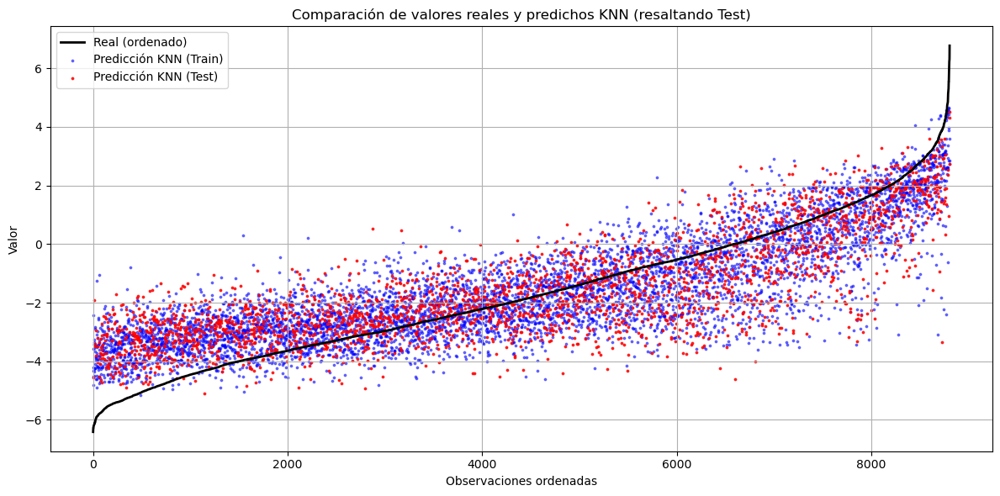
Regresión Lineal#
from sklearn.linear_model import LinearRegression
pipeLINEAL= Pipeline([('scaler', MinMaxScaler()), ("reglineal", LinearRegression())])
pipeLINEAL.fit(X_train, y_train)
Pipeline(steps=[('scaler', MinMaxScaler()), ('reglineal', LinearRegression())])In a Jupyter environment, please rerun this cell to show the HTML representation or trust the notebook. On GitHub, the HTML representation is unable to render, please try loading this page with nbviewer.org.
Pipeline(steps=[('scaler', MinMaxScaler()), ('reglineal', LinearRegression())])MinMaxScaler()
LinearRegression()
print("Train score: {:.2f}".format(pipeLINEAL.score(X_train, y_train)))
print("Test score: {:.2f}".format(pipeLINEAL.score(X_test, y_test)))
Train score: 0.66
Test score: 0.64
y_pred_reglineal = pipeLINEAL.predict(X_test)
y_pred_reglineal_todos = pipeLINEAL.predict(X_final)
# Ordenar y obtener predicciones correspondientes
orden = np.argsort(y)
y_real_ordenado = y[orden]
y_pred_correspondiente = y_pred_reglineal_todos[orden]
# Crear una máscara booleana para los puntos que están en y_test
es_test = np.isin(y_real_ordenado, y_test)
plt.figure(figsize=(12, 6))
plt.plot(y_real_ordenado, label='Real (ordenado)', color='black', linewidth=2)
# Puntos de entrenamiento
plt.scatter(np.where(~es_test)[0], y_pred_correspondiente[~es_test],
label='Predicción Regresión lineal (Train)', color='blue', s=3, alpha=0.5)
# Puntos de test
plt.scatter(np.where(es_test)[0], y_pred_correspondiente[es_test],
label='Predicción Regresión lineal (Test)', color='red', s=3, alpha=0.8)
plt.title('Comparación de valores reales y predichos Regresión lineal (resaltando Test)')
plt.xlabel('Observaciones ordenadas')
plt.ylabel('Valor')
plt.legend()
plt.grid(True)
plt.tight_layout()
plt.show()
Ridge#
from sklearn.linear_model import Ridge
pipeRIDGE= Pipeline([('scaler', MinMaxScaler()), ("ridge", Ridge())])
param_gridridge = {
'ridge__alpha': [0.01, 0.1, 1, 10, 100, 200, 500], # Regularización
'ridge__solver': ['auto', 'svd', 'cholesky', 'lsqr', 'saga'], # Solvers disponibles
'ridge__tol': [1e-4, 1e-3, 1e-2], # Tolerancia para la convergencia
'ridge__max_iter': [1000, 5000, 10000] # Iteraciones máximas
}
"""grid_searchRIDGE = GridSearchCV(pipeRIDGE , param_grid=param_gridridge, scoring='r2', cv=5, n_jobs=-1)
grid_searchRIDGE.fit(X_train, y_train)
print("Best cross-validation accuracy: {:.2f}".format(grid_searchRIDGE.best_score_))
print("Test set score: {:.2f}".format(grid_searchRIDGE.score(X_test, y_test)))
print("Best parameters: {}".format(grid_searchRIDGE.best_params_))"""
'grid_searchRIDGE = GridSearchCV(pipeRIDGE , param_grid=param_gridridge, scoring=\'r2\', cv=5, n_jobs=-1)\ngrid_searchRIDGE.fit(X_train, y_train)\nprint("Best cross-validation accuracy: {:.2f}".format(grid_searchRIDGE.best_score_))\nprint("Test set score: {:.2f}".format(grid_searchRIDGE.score(X_test, y_test)))\nprint("Best parameters: {}".format(grid_searchRIDGE.best_params_))'
pipeRIDGEnuevo = Pipeline([('scaler', MinMaxScaler()),
("ridge", Ridge(alpha= 0.01, max_iter= 1000, solver= 'auto', tol= 0.0001))])
pipeRIDGEnuevo.fit(X_train, y_train)
Pipeline(steps=[('scaler', MinMaxScaler()),
('ridge', Ridge(alpha=0.01, max_iter=1000))])In a Jupyter environment, please rerun this cell to show the HTML representation or trust the notebook. On GitHub, the HTML representation is unable to render, please try loading this page with nbviewer.org.
Pipeline(steps=[('scaler', MinMaxScaler()),
('ridge', Ridge(alpha=0.01, max_iter=1000))])MinMaxScaler()
Ridge(alpha=0.01, max_iter=1000)
y_pred_Ridge = pipeRIDGEnuevo.predict(X_test)
y_pred_Ridge_todos = pipeRIDGEnuevo.predict(X_final)
# Ordenar y obtener predicciones correspondientes
orden = np.argsort(y)
y_real_ordenado = y[orden]
y_pred_correspondiente = y_pred_Ridge_todos[orden]
# Crear una máscara booleana para los puntos que están en y_test
es_test = np.isin(y_real_ordenado, y_test)
plt.figure(figsize=(12, 6))
plt.plot(y_real_ordenado, label='Real (ordenado)', color='black', linewidth=2)
# Puntos de entrenamiento
plt.scatter(np.where(~es_test)[0], y_pred_correspondiente[~es_test],
label='Predicción Ridge (Train)', color='blue', s=3, alpha=0.5)
# Puntos de test
plt.scatter(np.where(es_test)[0], y_pred_correspondiente[es_test],
label='Predicción Ridge (Test)', color='red', s=3, alpha=0.8)
plt.title('Comparación de valores reales y predichos Ridge (resaltando Test)')
plt.xlabel('Observaciones ordenadas')
plt.ylabel('Valor')
plt.legend()
plt.grid(True)
plt.tight_layout()
plt.show()
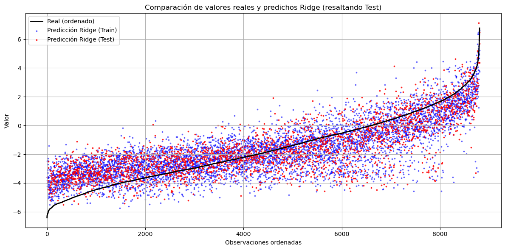
Lasso#
from sklearn.linear_model import Lasso
pipeLASSO= Pipeline([('scaler', MinMaxScaler()), ("lasso", Lasso())])
param_gridlasso = {
'lasso__alpha': [0.0001, 0.001, 0.01, 0.1, 1, 10, 100], # Regularización
'lasso__max_iter': [1000, 5000, 10000], # Iteraciones máximas para converger
'lasso__tol': [1e-4, 1e-3, 1e-2] # Tolerancia de convergencia
}
"""grid_searchLASSO = GridSearchCV(pipeLASSO , param_grid=param_gridlasso, scoring='neg_root_mean_squared_error', cv=5, n_jobs=-1)
grid_searchLASSO.fit(X_train, y_train)
print("Best cross-validation accuracy: {:.2f}".format(grid_searchLASSO.best_score_))
print("Test set score: {:.2f}".format(grid_searchLASSO.score(X_test, y_test)))
print("Best parameters: {}".format(grid_searchLASSO.best_params_))"""
'grid_searchLASSO = GridSearchCV(pipeLASSO , param_grid=param_gridlasso, scoring=\'neg_root_mean_squared_error\', cv=5, n_jobs=-1)\ngrid_searchLASSO.fit(X_train, y_train)\nprint("Best cross-validation accuracy: {:.2f}".format(grid_searchLASSO.best_score_))\nprint("Test set score: {:.2f}".format(grid_searchLASSO.score(X_test, y_test)))\nprint("Best parameters: {}".format(grid_searchLASSO.best_params_))'
pipeLASSOnuevo = Pipeline([('scaler', MinMaxScaler()),
("lasso", Lasso(alpha= 0.0001, max_iter=10000, tol= 0.0001))])
pipeLASSOnuevo.fit(X_train, y_train)
Pipeline(steps=[('scaler', MinMaxScaler()),
('lasso', Lasso(alpha=0.0001, max_iter=10000))])In a Jupyter environment, please rerun this cell to show the HTML representation or trust the notebook. On GitHub, the HTML representation is unable to render, please try loading this page with nbviewer.org.
Pipeline(steps=[('scaler', MinMaxScaler()),
('lasso', Lasso(alpha=0.0001, max_iter=10000))])MinMaxScaler()
Lasso(alpha=0.0001, max_iter=10000)
y_pred_Lasso = pipeLASSOnuevo.predict(X_test)
y_pred_Lasso_todos = pipeLASSOnuevo.predict(X_final)
# Ordenar y obtener predicciones correspondientes
orden = np.argsort(y)
y_real_ordenado = y[orden]
y_pred_correspondiente = y_pred_Lasso_todos[orden]
# Crear una máscara booleana para los puntos que están en y_test
es_test = np.isin(y_real_ordenado, y_test)
plt.figure(figsize=(12, 6))
plt.plot(y_real_ordenado, label='Real (ordenado)', color='black', linewidth=2)
# Puntos de entrenamiento
plt.scatter(np.where(~es_test)[0], y_pred_correspondiente[~es_test],
label='Predicción Lasso (Train)', color='blue', s=3, alpha=0.5)
# Puntos de test
plt.scatter(np.where(es_test)[0], y_pred_correspondiente[es_test],
label='Predicción Lasso (Test)', color='red', s=3, alpha=0.8)
plt.title('Comparación de valores reales y predichos Lasso (resaltando Test)')
plt.xlabel('Observaciones ordenadas')
plt.ylabel('Valor')
plt.legend()
plt.grid(True)
plt.tight_layout()
plt.show()
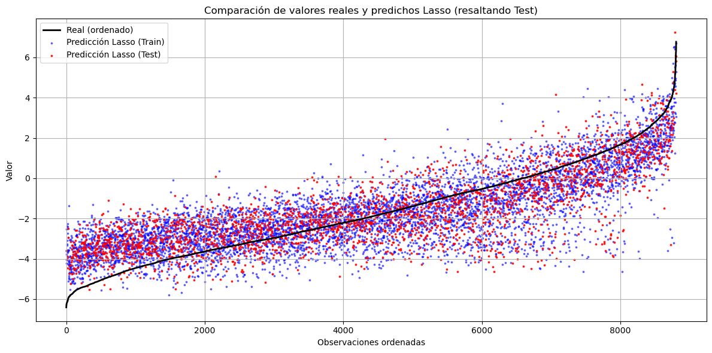
Random Forest#
from sklearn.ensemble import RandomForestRegressor
pipeRF= Pipeline([ ("rf", RandomForestRegressor())])
param_gridRF = {
'rf__n_estimators': [200,300],
'rf__max_depth': [10,20,30],
'rf__min_samples_split': [2, 5, 10],
'rf__min_samples_leaf': [1, 2, 4],
}
"""grid_searchRF = GridSearchCV(pipeRF, param_grid=param_gridRF, scoring='neg_root_mean_squared_error', cv=5, n_jobs=-1)
grid_searchRF.fit(X_train, y_train)
print("Best cross-validation accuracy: {:.2f}".format(-grid_searchRF.best_score_))
print("Test set score: {:.2f}".format(-grid_searchRF.score(X_test, y_test)))
print("Best parameters: {}".format(grid_searchRF.best_params_))"""
'grid_searchRF = GridSearchCV(pipeRF, param_grid=param_gridRF, scoring=\'neg_root_mean_squared_error\', cv=5, n_jobs=-1)\ngrid_searchRF.fit(X_train, y_train)\nprint("Best cross-validation accuracy: {:.2f}".format(-grid_searchRF.best_score_))\nprint("Test set score: {:.2f}".format(-grid_searchRF.score(X_test, y_test)))\nprint("Best parameters: {}".format(grid_searchRF.best_params_))'
"""print("Best cross-validation accuracy: 1.09")
print("Test set score: 1.04")
print("Best parameters: {'rf__max_depth': 30, 'rf__min_samples_leaf': 1, 'rf__min_samples_split': 5, 'rf__n_estimators': 300}")"""
'print("Best cross-validation accuracy: 1.09")\nprint("Test set score: 1.04")\nprint("Best parameters: {\'rf__max_depth\': 30, \'rf__min_samples_leaf\': 1, \'rf__min_samples_split\': 5, \'rf__n_estimators\': 300}")'
"""pipeRFnuevo = Pipeline([('rf', RandomForestRegressor(n_estimators=200,max_depth=20,min_samples_split=2,
criterion='squared_error',min_samples_leaf =2
, n_jobs=-1))])"""
"pipeRFnuevo = Pipeline([('rf', RandomForestRegressor(n_estimators=200,max_depth=20,min_samples_split=2,\n criterion='squared_error',min_samples_leaf =2\n , n_jobs=-1))])"
pipeRFnuevo = Pipeline([('rf',RandomForestRegressor(n_estimators=500,max_depth=8,min_samples_split=5,
criterion='squared_error',min_samples_leaf =10
, n_jobs=-1))])
pipeRFnuevo.fit(X_train, y_train)
Pipeline(steps=[('rf',
RandomForestRegressor(max_depth=8, min_samples_leaf=10,
min_samples_split=5, n_estimators=500,
n_jobs=-1))])In a Jupyter environment, please rerun this cell to show the HTML representation or trust the notebook. On GitHub, the HTML representation is unable to render, please try loading this page with nbviewer.org.
Pipeline(steps=[('rf',
RandomForestRegressor(max_depth=8, min_samples_leaf=10,
min_samples_split=5, n_estimators=500,
n_jobs=-1))])RandomForestRegressor(max_depth=8, min_samples_leaf=10, min_samples_split=5,
n_estimators=500, n_jobs=-1)print("Train score: {:.2f}".format(pipeRFnuevo.score(X_train, y_train)))
print("Test score: {:.2f}".format(pipeRFnuevo.score(X_test, y_test)))
Train score: 0.80
Test score: 0.76
y_pred_RAND = pipeRFnuevo.predict(X_test)
y_pred_RAND_todos = pipeRFnuevo.predict(X_final)
# Ordenar y obtener predicciones correspondientes
orden = np.argsort(y)
y_real_ordenado = y[orden]
y_pred_correspondiente = y_pred_RAND_todos[orden]
# Crear una máscara booleana para los puntos que están en y_test
es_test = np.isin(y_real_ordenado, y_test)
plt.figure(figsize=(12, 6))
plt.plot(y_real_ordenado, label='Real (ordenado)', color='black', linewidth=2)
# Puntos de entrenamiento
plt.scatter(np.where(~es_test)[0], y_pred_correspondiente[~es_test],
label='Predicción Random Forest (Train)', color='blue', s=3, alpha=0.5)
# Puntos de test
plt.scatter(np.where(es_test)[0], y_pred_correspondiente[es_test],
label='Predicción Random Forest (Test)', color='red', s=3, alpha=0.8)
plt.title('Comparación de valores reales y predichos Random Forest (resaltando Test)')
plt.xlabel('Observaciones ordenadas')
plt.ylabel('Valor')
plt.legend()
plt.grid(True)
plt.tight_layout()
plt.show()
XGBoost#
import xgboost as xgb
from xgboost import XGBRegressor
print(xgb.build_info())
print(xgb.__version__)
{'BUILTIN_PREFETCH_PRESENT': False, 'CUDA_VERSION': [12, 4], 'DEBUG': False, 'MM_PREFETCH_PRESENT': True, 'THRUST_VERSION': [2, 3, 2], 'USE_CUDA': True, 'USE_DLOPEN_NCCL': False, 'USE_FEDERATED': False, 'USE_NCCL': False, 'USE_OPENMP': True, 'USE_RMM': False, 'libxgboost': 'C:\\Users\\elias\\AppData\\Roaming\\Python\\Python39\\site-packages\\xgboost\\lib\\xgboost.dll'}
2.1.4
pipeXGB= Pipeline([ ("xgb", XGBRegressor(tree_method="gpu_hist", gpu_id=1))])
param_gridXGB = {
'xgb__max_depth': [5,6],
'xgb__min_child_weight': [1, 5,10],
'xgb__subsample': [0.7, 1],
'xgb__colsample_bytree': [0.7, 1],
'xgb__learning_rate': [0.1, 0.2],
'xgb__n_estimators': [100,200],
'xgb__reg_lambda': [0,1, 10],
'xgb__reg_alpha': [0,1 ,10]
}
"""grid_searchXGB = GridSearchCV(pipeXGB, param_grid=param_gridXGB, scoring='neg_root_mean_squared_error', cv=5, n_jobs=-1)
grid_searchXGB.fit(X_train, y_train)
print("Best cross-validation accuracy: {:.2f}".format(-grid_searchXGB.best_score_))
print("Test set score: {:.2f}".format(-grid_searchXGB.score(X_test, y_test)))
print("Best parameters: {}".format(grid_searchXGB.best_params_))"""
'grid_searchXGB = GridSearchCV(pipeXGB, param_grid=param_gridXGB, scoring=\'neg_root_mean_squared_error\', cv=5, n_jobs=-1)\ngrid_searchXGB.fit(X_train, y_train)\nprint("Best cross-validation accuracy: {:.2f}".format(-grid_searchXGB.best_score_))\nprint("Test set score: {:.2f}".format(-grid_searchXGB.score(X_test, y_test)))\nprint("Best parameters: {}".format(grid_searchXGB.best_params_))'
print("Best cross-validation RMSE: 0.98")
print("Test set score: 0.91")
print("Best parameters: {'xgb__colsample_bytree': 0.7, 'xgb__learning_rate': 0.1, 'xgb__max_depth': 6, 'xgb__min_child_weight': 5, 'xgb__n_estimators': 200, 'xgb__reg_alpha': 1, 'xgb__reg_lambda': 0, 'xgb__subsample': 1}")
Best cross-validation RMSE: 0.98
Test set score: 0.91
Best parameters: {'xgb__colsample_bytree': 0.7, 'xgb__learning_rate': 0.1, 'xgb__max_depth': 6, 'xgb__min_child_weight': 5, 'xgb__n_estimators': 200, 'xgb__reg_alpha': 1, 'xgb__reg_lambda': 0, 'xgb__subsample': 1}
"""pipeXGBnuevo = Pipeline([('xgb', XGBRegressor(colsample_bytree= 0.7,
learning_rate= 0.1,
max_depth=6,
min_child_weight=5,
n_estimators= 200,
reg_alpha= 1,
reg_lambda= 0,
subsample= 1))])"""
"pipeXGBnuevo = Pipeline([('xgb', XGBRegressor(colsample_bytree= 0.7,\n learning_rate= 0.1,\n max_depth=6,\n min_child_weight=5,\n n_estimators= 200,\n reg_alpha= 1,\n reg_lambda= 0,\n subsample= 1))])"
pipeXGBnuevo = Pipeline([('xgb', XGBRegressor(max_depth=3,n_estimators= 200, reg_alpha= 10,
reg_lambda= 0.01,learning_rate= 0.1 ))])
pipeXGBnuevo.fit(X_train, y_train)
Pipeline(steps=[('xgb',
XGBRegressor(base_score=None, booster=None, callbacks=None,
colsample_bylevel=None, colsample_bynode=None,
colsample_bytree=None, device=None,
early_stopping_rounds=None,
enable_categorical=False, eval_metric=None,
feature_types=None, gamma=None, grow_policy=None,
importance_type=None,
interaction_constraints=None, learning_rate=0.1,
max_bin=None, max_cat_threshold=None,
max_cat_to_onehot=None, max_delta_step=None,
max_depth=3, max_leaves=None,
min_child_weight=None, missing=nan,
monotone_constraints=None, multi_strategy=None,
n_estimators=200, n_jobs=None,
num_parallel_tree=None, random_state=None, ...))])In a Jupyter environment, please rerun this cell to show the HTML representation or trust the notebook. On GitHub, the HTML representation is unable to render, please try loading this page with nbviewer.org.
Pipeline(steps=[('xgb',
XGBRegressor(base_score=None, booster=None, callbacks=None,
colsample_bylevel=None, colsample_bynode=None,
colsample_bytree=None, device=None,
early_stopping_rounds=None,
enable_categorical=False, eval_metric=None,
feature_types=None, gamma=None, grow_policy=None,
importance_type=None,
interaction_constraints=None, learning_rate=0.1,
max_bin=None, max_cat_threshold=None,
max_cat_to_onehot=None, max_delta_step=None,
max_depth=3, max_leaves=None,
min_child_weight=None, missing=nan,
monotone_constraints=None, multi_strategy=None,
n_estimators=200, n_jobs=None,
num_parallel_tree=None, random_state=None, ...))])XGBRegressor(base_score=None, booster=None, callbacks=None,
colsample_bylevel=None, colsample_bynode=None,
colsample_bytree=None, device=None, early_stopping_rounds=None,
enable_categorical=False, eval_metric=None, feature_types=None,
gamma=None, grow_policy=None, importance_type=None,
interaction_constraints=None, learning_rate=0.1, max_bin=None,
max_cat_threshold=None, max_cat_to_onehot=None,
max_delta_step=None, max_depth=3, max_leaves=None,
min_child_weight=None, missing=nan, monotone_constraints=None,
multi_strategy=None, n_estimators=200, n_jobs=None,
num_parallel_tree=None, random_state=None, ...)print("Train score: {:.2f}".format(pipeXGBnuevo.score(X_train, y_train)))
print("Test score: {:.2f}".format(pipeXGBnuevo.score(X_test, y_test)))
Train score: 0.84
Test score: 0.82
y_pred_XGB = pipeXGBnuevo.predict(X_test)
y_pred_XGB_todos = pipeXGBnuevo.predict(X_final)
# Ordenar y obtener predicciones correspondientes
orden = np.argsort(y)
y_real_ordenado = y[orden]
y_pred_correspondiente = y_pred_XGB_todos[orden]
# Crear una máscara booleana para los puntos que están en y_test
es_test = np.isin(y_real_ordenado, y_test)
plt.figure(figsize=(12, 6))
plt.plot(y_real_ordenado, label='Real (ordenado)', color='black', linewidth=2)
# Puntos de entrenamiento
plt.scatter(np.where(~es_test)[0], y_pred_correspondiente[~es_test],
label='Predicción XGBoost (Train)', color='blue', s=3, alpha=0.5)
# Puntos de test
plt.scatter(np.where(es_test)[0], y_pred_correspondiente[es_test],
label='Predicción XGBoost (Test)', color='red', s=3, alpha=0.8)
plt.title('Comparación de valores reales y predichos XGBoost (resaltando Test)')
plt.xlabel('Observaciones ordenadas')
plt.ylabel('Valor')
plt.legend()
plt.grid(True)
plt.tight_layout()
plt.show()
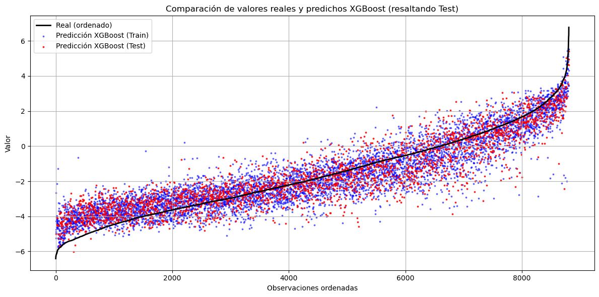
X_XGB=df_copy.copy()
X_XGB[categorical_columns] = X_XGB[categorical_columns].astype('category')
X_XGB.drop(["T_0.01_RotD50"],axis=1, inplace=True)
X_trainXGB, X_testXGB, y_trainXGB, y_testXGB = train_test_split(X_XGB, df_copy["T_0.01_RotD50"], test_size=0.3, random_state=0)
f_importance = XGBRegressor(colsample_bytree= 0.7,learning_rate= 0.1,max_depth=6,min_child_weight=5,n_estimators= 200,reg_alpha= 1,reg_lambda= 0,subsample= 1, enable_categorical=True)
f_importance.fit(X_trainXGB, y_trainXGB)
XGBRegressor(base_score=None, booster=None, callbacks=None,
colsample_bylevel=None, colsample_bynode=None,
colsample_bytree=0.7, device=None, early_stopping_rounds=None,
enable_categorical=True, eval_metric=None, feature_types=None,
gamma=None, grow_policy=None, importance_type=None,
interaction_constraints=None, learning_rate=0.1, max_bin=None,
max_cat_threshold=None, max_cat_to_onehot=None,
max_delta_step=None, max_depth=6, max_leaves=None,
min_child_weight=5, missing=nan, monotone_constraints=None,
multi_strategy=None, n_estimators=200, n_jobs=None,
num_parallel_tree=None, random_state=None, ...)In a Jupyter environment, please rerun this cell to show the HTML representation or trust the notebook. On GitHub, the HTML representation is unable to render, please try loading this page with nbviewer.org.
XGBRegressor(base_score=None, booster=None, callbacks=None,
colsample_bylevel=None, colsample_bynode=None,
colsample_bytree=0.7, device=None, early_stopping_rounds=None,
enable_categorical=True, eval_metric=None, feature_types=None,
gamma=None, grow_policy=None, importance_type=None,
interaction_constraints=None, learning_rate=0.1, max_bin=None,
max_cat_threshold=None, max_cat_to_onehot=None,
max_delta_step=None, max_depth=6, max_leaves=None,
min_child_weight=5, missing=nan, monotone_constraints=None,
multi_strategy=None, n_estimators=200, n_jobs=None,
num_parallel_tree=None, random_state=None, ...)xgb.plot_importance(f_importance)
plt.show()
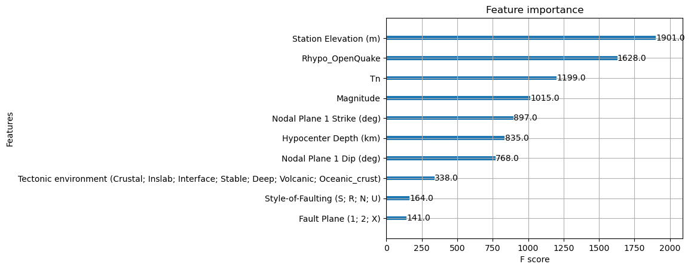
SVM#
from sklearn.svm import SVR
pipeSVM = Pipeline([("scaler", MinMaxScaler()), ("svm", SVR(kernel ='rbf', shrinking = True))])
param_gridSVM = {'svm__C': [0.001, 0.01, 0.1, 1, 10, 100],
'svm__gamma': [0.001, 0.01, 0.1, 1, 10, 100],
'svm__epsilon': [0.001, 0.01, 0.1, 0.5, 1.0],
}
"""grid_searchSVM = GridSearchCV(pipeSVM, param_grid=param_gridSVM, scoring='neg_root_mean_squared_error', cv=5, n_jobs=6)
grid_searchSVM.fit(X_train, y_train)
print("Best cross-validation accuracy: {:.2f}".format(-grid_searchSVM.best_score_))
print("Test set score: {:.2f}".format(-grid_searchSVM.score(X_test, y_test)))
print("Best parameters: {}".format(grid_searchSVM.best_params_))"""
'grid_searchSVM = GridSearchCV(pipeSVM, param_grid=param_gridSVM, scoring=\'neg_root_mean_squared_error\', cv=5, n_jobs=6)\ngrid_searchSVM.fit(X_train, y_train)\nprint("Best cross-validation accuracy: {:.2f}".format(-grid_searchSVM.best_score_))\nprint("Test set score: {:.2f}".format(-grid_searchSVM.score(X_test, y_test)))\nprint("Best parameters: {}".format(grid_searchSVM.best_params_))'
pipeSVMnuevo = Pipeline([('scaler', MinMaxScaler()),('svm', SVR(C=300,gamma=0.01,epsilon=0.1,kernel='rbf',shrinking=True))])
pipeSVMnuevo.fit(X_train, y_train)
Pipeline(steps=[('scaler', MinMaxScaler()), ('svm', SVR(C=300, gamma=0.01))])In a Jupyter environment, please rerun this cell to show the HTML representation or trust the notebook. On GitHub, the HTML representation is unable to render, please try loading this page with nbviewer.org.
Pipeline(steps=[('scaler', MinMaxScaler()), ('svm', SVR(C=300, gamma=0.01))])MinMaxScaler()
SVR(C=300, gamma=0.01)
print("Train score: {:.2f}".format(pipeSVMnuevo.score(X_train, y_train)))
print("Test score: {:.2f}".format(pipeSVMnuevo.score(X_test, y_test)))
Train score: 0.70
Test score: 0.68
y_pred_SVM = pipeSVMnuevo.predict(X_test)
y_pred_SVM_todos = pipeSVMnuevo.predict(X_final)
# Ordenar y obtener predicciones correspondientes
orden = np.argsort(y)
y_real_ordenado = y[orden]
y_pred_correspondiente = y_pred_SVM_todos[orden]
# Crear una máscara booleana para los puntos que están en y_test
es_test = np.isin(y_real_ordenado, y_test)
plt.figure(figsize=(12, 6))
plt.plot(y_real_ordenado, label='Real (ordenado)', color='black', linewidth=2)
# Puntos de entrenamiento
plt.scatter(np.where(~es_test)[0], y_pred_correspondiente[~es_test],
label='Predicción SVM (Train)', color='blue', s=3, alpha=0.5)
# Puntos de test
plt.scatter(np.where(es_test)[0], y_pred_correspondiente[es_test],
label='Predicción SVM (Test)', color='red', s=3, alpha=0.8)
plt.title('Comparación de valores reales y predichos SVM (resaltando Test)')
plt.xlabel('Observaciones ordenadas')
plt.ylabel('Valor')
plt.legend()
plt.grid(True)
plt.tight_layout()
plt.show()
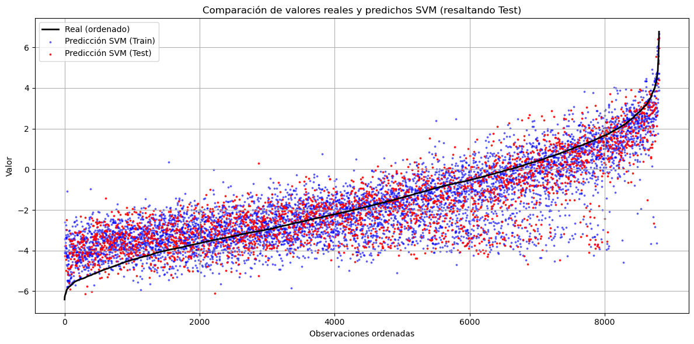
Meta Stacking#
from sklearn.ensemble import StackingRegressor
from sklearn.ensemble import GradientBoostingRegressor, ExtraTreesRegressor, AdaBoostRegressor
import lightgbm as lgb
from sklearn.linear_model import HuberRegressor, BayesianRidge, QuantileRegressor, TheilSenRegressor
from sklearn.neural_network import MLPRegressor
from sklearn.experimental import enable_hist_gradient_boosting # noqa
from sklearn.ensemble import HistGradientBoostingRegressor
from catboost import CatBoostRegressor
from sklearn.gaussian_process import GaussianProcessRegressor
from sklearn.gaussian_process.kernels import RBF, WhiteKernel
# Metamodelo robusto: tolera outliers en errores de modelos base
"""meta_model = Pipeline([
('scaler',MinMaxScaler()),
('reg',LinearRegression())]
)"""
meta_model = LinearRegression()
stack = StackingRegressor(
estimators=[], # por defecto, pero se cambiará con el grid
final_estimator=meta_model,
passthrough=False,
n_jobs=-1
)
param_grid_Stacking = {
'estimators': [
[('xgb', pipeXGBnuevo), ('svm', pipeSVMnuevo), ('knn', pipeKNNnuevo), ('rf', pipeRFnuevo) ],
[('xgb', pipeXGBnuevo), ('svm', pipeSVMnuevo), ('knn', pipeKNNnuevo)],
[('xgb', pipeXGBnuevo), ('rf', pipeRFnuevo), ('svm', pipeSVMnuevo)],
[('xgb', pipeXGBnuevo), ('rf', pipeRFnuevo), ('knn', pipeKNNnuevo)],
[('xgb', pipeXGBnuevo), ('svm', pipeSVMnuevo), ('reg', pipeLINEAL)],
[('svm', pipeSVMnuevo), ('knn', pipeKNNnuevo), ('reg', pipeLINEAL)],
[('xgb', pipeXGBnuevo), ('rf', pipeRFnuevo), ('reg', pipeLINEAL)],
[('svm', pipeSVMnuevo), ('rf', pipeRFnuevo), ('reg', pipeLINEAL)],
[('xgb', pipeXGBnuevo), ('rf', pipeRFnuevo)],
[('xgb', pipeXGBnuevo), ('reg', pipeLINEAL)],
[('svm', pipeSVMnuevo), ('reg', pipeLINEAL)]
]}
"""grid_searchStacking = GridSearchCV(estimator=stack,param_grid=param_grid_Stacking,cv=5,scoring='r2',n_jobs=-1)
grid_searchStacking.fit(X_train, y_train)"""
"grid_searchStacking = GridSearchCV(estimator=stack,param_grid=param_grid_Stacking,cv=5,scoring='r2',n_jobs=-1)\ngrid_searchStacking.fit(X_train, y_train)"
"""print("Best cross-validation accuracy: {:.2f}".format(-grid_searchStacking.best_score_))
print("Test set score: {:.2f}".format(-grid_searchStacking.score(X_test, y_test)))
print("Best parameters: {}".format(grid_searchStacking.best_params_))"""
'print("Best cross-validation accuracy: {:.2f}".format(-grid_searchStacking.best_score_))\nprint("Test set score: {:.2f}".format(-grid_searchStacking.score(X_test, y_test)))\nprint("Best parameters: {}".format(grid_searchStacking.best_params_))'
#meta_model = lgb.LGBMRegressor()
estimators = [
#('gbr', GradientBoostingRegressor(n_estimators=300, learning_rate=0.05)),
#('et', ExtraTreesRegressor(n_estimators=100, max_depth=12, random_state=0)),
#('ada', AdaBoostRegressor(n_estimators=100, learning_rate=0.1)),
('cat', CatBoostRegressor()),
#('lgb', lgb.LGBMRegressor()),
#('bayes', BayesianRidge()),
#('quant', QuantileRegressor(quantile=0.5, alpha=1.0, solver='highs')),
#('theil', TheilSenRegressor()),
#('mlp', MLPRegressor(hidden_layer_sizes=(80, 40), max_iter=2000, early_stopping=True, random_state=0)),
#('histgb', HistGradientBoostingRegressor(max_iter=300, learning_rate=0.05))
#('svm', pipeSVMnuevo)
('rf', RandomForestRegressor())
]
stacking_model = StackingRegressor(
estimators=estimators,
final_estimator=meta_model,
cv=5, # Validación cruzada para entrenar el meta-modelo
n_jobs=-1, # Paralelizar si es posible
passthrough= False
)
stacking_model.fit(X_train, y_train)
---------------------------------------------------------------------------
KeyboardInterrupt Traceback (most recent call last)
File ~\anaconda3\envs\ml_subject\lib\site-packages\joblib\parallel.py:1650, in Parallel._get_outputs(self, iterator, pre_dispatch)
1649 with self._backend.retrieval_context():
-> 1650 yield from self._retrieve()
1652 except GeneratorExit:
1653 # The generator has been garbage collected before being fully
1654 # consumed. This aborts the remaining tasks if possible and warn
1655 # the user if necessary.
File ~\anaconda3\envs\ml_subject\lib\site-packages\joblib\parallel.py:1762, in Parallel._retrieve(self)
1759 if ((len(self._jobs) == 0) or
1760 (self._jobs[0].get_status(
1761 timeout=self.timeout) == TASK_PENDING)):
-> 1762 time.sleep(0.01)
1763 continue
KeyboardInterrupt:
During handling of the above exception, another exception occurred:
OSError Traceback (most recent call last)
File ~\anaconda3\envs\ml_subject\lib\site-packages\joblib\parallel.py:1703, in Parallel._get_outputs(self, iterator, pre_dispatch)
1702 self._exception = True
-> 1703 self._abort()
1704 raise
File ~\anaconda3\envs\ml_subject\lib\site-packages\joblib\parallel.py:1614, in Parallel._abort(self)
1613 ensure_ready = self._managed_backend
-> 1614 backend.abort_everything(ensure_ready=ensure_ready)
1615 self._aborted = True
File ~\anaconda3\envs\ml_subject\lib\site-packages\joblib\_parallel_backends.py:620, in LokyBackend.abort_everything(self, ensure_ready)
618 """Shutdown the workers and restart a new one with the same parameters
619 """
--> 620 self._workers.terminate(kill_workers=True)
621 self._workers = None
File ~\anaconda3\envs\ml_subject\lib\site-packages\joblib\executor.py:87, in MemmappingExecutor.terminate(self, kill_workers)
86 with self._submit_resize_lock:
---> 87 self._temp_folder_manager._clean_temporary_resources(
88 force=kill_workers, allow_non_empty=True
89 )
File ~\anaconda3\envs\ml_subject\lib\site-packages\joblib\_memmapping_reducer.py:615, in TemporaryResourcesManager._clean_temporary_resources(self, context_id, force, allow_non_empty)
614 for context_id in list(self._cached_temp_folders):
--> 615 self._clean_temporary_resources(
616 context_id, force=force, allow_non_empty=allow_non_empty
617 )
618 else:
File ~\anaconda3\envs\ml_subject\lib\site-packages\joblib\_memmapping_reducer.py:626, in TemporaryResourcesManager._clean_temporary_resources(self, context_id, force, allow_non_empty)
622 if force:
623 # Some workers have failed and the ref counted might
624 # be off. The workers should have shut down by this
625 # time so forcefully clean up the files.
--> 626 resource_tracker.unregister(
627 os.path.join(temp_folder, filename), "file"
628 )
629 else:
File ~\anaconda3\envs\ml_subject\lib\site-packages\joblib\externals\loky\backend\resource_tracker.py:183, in ResourceTracker.unregister(self, name, rtype)
182 """Unregister a named resource with resource tracker."""
--> 183 self.ensure_running()
184 self._send("UNREGISTER", name, rtype)
File ~\anaconda3\envs\ml_subject\lib\site-packages\joblib\externals\loky\backend\resource_tracker.py:95, in ResourceTracker.ensure_running(self)
93 if self._fd is not None:
94 # resource tracker was launched before, is it still running?
---> 95 if self._check_alive():
96 # => still alive
97 return
File ~\anaconda3\envs\ml_subject\lib\site-packages\joblib\externals\loky\backend\resource_tracker.py:170, in ResourceTracker._check_alive(self)
169 try:
--> 170 self._send("PROBE", "", "")
171 except BrokenPipeError:
File ~\anaconda3\envs\ml_subject\lib\site-packages\joblib\externals\loky\backend\resource_tracker.py:197, in ResourceTracker._send(self, cmd, name, rtype)
196 msg = f"{cmd}:{name}:{rtype}\n".encode("ascii")
--> 197 nbytes = os.write(self._fd, msg)
198 assert nbytes == len(msg)
OSError: [Errno 22] Invalid argument
During handling of the above exception, another exception occurred:
OSError Traceback (most recent call last)
Cell In[93], line 1
----> 1 stacking_model.fit(X_train, y_train)
File ~\anaconda3\envs\ml_subject\lib\site-packages\sklearn\utils\validation.py:63, in _deprecate_positional_args.<locals>._inner_deprecate_positional_args.<locals>.inner_f(*args, **kwargs)
61 extra_args = len(args) - len(all_args)
62 if extra_args <= 0:
---> 63 return f(*args, **kwargs)
65 # extra_args > 0
66 args_msg = [
67 "{}={}".format(name, arg)
68 for name, arg in zip(kwonly_args[:extra_args], args[-extra_args:])
69 ]
File ~\anaconda3\envs\ml_subject\lib\site-packages\sklearn\ensemble\_stacking.py:1063, in StackingRegressor.fit(self, X, y, sample_weight, **fit_params)
1061 if sample_weight is not None:
1062 fit_params["sample_weight"] = sample_weight
-> 1063 return super().fit(X, y, **fit_params)
File ~\anaconda3\envs\ml_subject\lib\site-packages\sklearn\base.py:1389, in _fit_context.<locals>.decorator.<locals>.wrapper(estimator, *args, **kwargs)
1382 estimator._validate_params()
1384 with config_context(
1385 skip_parameter_validation=(
1386 prefer_skip_nested_validation or global_skip_validation
1387 )
1388 ):
-> 1389 return fit_method(estimator, *args, **kwargs)
File ~\anaconda3\envs\ml_subject\lib\site-packages\sklearn\ensemble\_stacking.py:254, in _BaseStacking.fit(self, X, y, **fit_params)
251 if hasattr(cv, "random_state") and cv.random_state is None:
252 cv.random_state = np.random.RandomState()
--> 254 predictions = Parallel(n_jobs=self.n_jobs)(
255 delayed(cross_val_predict)(
256 clone(est),
257 X,
258 y,
259 cv=deepcopy(cv),
260 method=meth,
261 n_jobs=self.n_jobs,
262 params=routed_params[name]["fit"],
263 verbose=self.verbose,
264 )
265 for name, est, meth in zip(names, all_estimators, self.stack_method_)
266 if est != "drop"
267 )
269 # Only not None or not 'drop' estimators will be used in transform.
270 # Remove the None from the method as well.
271 self.stack_method_ = [
272 meth
273 for (meth, est) in zip(self.stack_method_, all_estimators)
274 if est != "drop"
275 ]
File ~\anaconda3\envs\ml_subject\lib\site-packages\sklearn\utils\parallel.py:77, in Parallel.__call__(self, iterable)
72 config = get_config()
73 iterable_with_config = (
74 (_with_config(delayed_func, config), args, kwargs)
75 for delayed_func, args, kwargs in iterable
76 )
---> 77 return super().__call__(iterable_with_config)
File ~\anaconda3\envs\ml_subject\lib\site-packages\joblib\parallel.py:2007, in Parallel.__call__(self, iterable)
2001 # The first item from the output is blank, but it makes the interpreter
2002 # progress until it enters the Try/Except block of the generator and
2003 # reaches the first `yield` statement. This starts the asynchronous
2004 # dispatch of the tasks to the workers.
2005 next(output)
-> 2007 return output if self.return_generator else list(output)
File ~\anaconda3\envs\ml_subject\lib\site-packages\joblib\parallel.py:1711, in Parallel._get_outputs(self, iterator, pre_dispatch)
1709 self._running = False
1710 if not detach_generator_exit:
-> 1711 self._terminate_and_reset()
1713 while len(_remaining_outputs) > 0:
1714 batched_results = _remaining_outputs.popleft()
File ~\anaconda3\envs\ml_subject\lib\site-packages\joblib\parallel.py:1386, in Parallel._terminate_and_reset(self)
1384 self._calling = False
1385 if not self._managed_backend:
-> 1386 self._backend.terminate()
File ~\anaconda3\envs\ml_subject\lib\site-packages\joblib\_parallel_backends.py:610, in LokyBackend.terminate(self)
605 def terminate(self):
606 if self._workers is not None:
607 # Don't terminate the workers as we want to reuse them in later
608 # calls, but cleanup the temporary resources that the Parallel call
609 # created. This 'hack' requires a private, low-level operation.
--> 610 self._workers._temp_folder_manager._clean_temporary_resources(
611 context_id=self.parallel._id, force=False
612 )
613 self._workers = None
615 self.reset_batch_stats()
File ~\anaconda3\envs\ml_subject\lib\site-packages\joblib\_memmapping_reducer.py:630, in TemporaryResourcesManager._clean_temporary_resources(self, context_id, force, allow_non_empty)
626 resource_tracker.unregister(
627 os.path.join(temp_folder, filename), "file"
628 )
629 else:
--> 630 resource_tracker.maybe_unlink(
631 os.path.join(temp_folder, filename), "file"
632 )
634 # When forcing clean-up, try to delete the folder even if some
635 # files are still in it. Otherwise, try to delete the folder
636 allow_non_empty |= force
File ~\anaconda3\envs\ml_subject\lib\site-packages\joblib\externals\loky\backend\resource_tracker.py:188, in ResourceTracker.maybe_unlink(self, name, rtype)
186 def maybe_unlink(self, name, rtype):
187 """Decrement the refcount of a resource, and delete it if it hits 0"""
--> 188 self.ensure_running()
189 self._send("MAYBE_UNLINK", name, rtype)
File ~\anaconda3\envs\ml_subject\lib\site-packages\joblib\externals\loky\backend\resource_tracker.py:95, in ResourceTracker.ensure_running(self)
92 with self._lock:
93 if self._fd is not None:
94 # resource tracker was launched before, is it still running?
---> 95 if self._check_alive():
96 # => still alive
97 return
98 # => dead, launch it again
File ~\anaconda3\envs\ml_subject\lib\site-packages\joblib\externals\loky\backend\resource_tracker.py:170, in ResourceTracker._check_alive(self)
168 """Check for the existence of the resource tracker process."""
169 try:
--> 170 self._send("PROBE", "", "")
171 except BrokenPipeError:
172 return False
File ~\anaconda3\envs\ml_subject\lib\site-packages\joblib\externals\loky\backend\resource_tracker.py:197, in ResourceTracker._send(self, cmd, name, rtype)
195 raise ValueError("name too long")
196 msg = f"{cmd}:{name}:{rtype}\n".encode("ascii")
--> 197 nbytes = os.write(self._fd, msg)
198 assert nbytes == len(msg)
OSError: [Errno 22] Invalid argument
y_train_pred_stacking = stacking_model.predict(X_train)
y_test_pred_stacking = stacking_model.predict(X_test)
y_pred_stacking_todos = stacking_model.predict(X_final)
print("Train R²:", r2_score(y_train, y_train_pred_stacking))
print("Test R²:", r2_score(y_test, y_test_pred_stacking))
Train R²: 0.9394609062177381
Test R²: 0.8600448219145432
print("Pesos del meta-modelo:", stacking_model.final_estimator_.coef_)
Pesos del meta-modelo: [0.88327722 0.14359748]
# Ordenar y obtener predicciones correspondientes
orden = np.argsort(y)
y_real_ordenado = y[orden]
y_pred_correspondiente = y_pred_stacking_todos[orden]
# Crear una máscara booleana para los puntos que están en y_test
es_test = np.isin(y_real_ordenado, y_test)
plt.figure(figsize=(12, 6))
plt.plot(y_real_ordenado, label='Real (ordenado)', color='black', linewidth=2)
# Puntos de entrenamiento
plt.scatter(np.where(~es_test)[0], y_pred_correspondiente[~es_test],
label='Predicción Stacking (Train)', color='blue', s=3, alpha=0.5)
# Puntos de test
plt.scatter(np.where(es_test)[0], y_pred_correspondiente[es_test],
label='Predicción Stacking (Test)', color='red', s=3, alpha=0.8)
plt.title('Comparación de valores reales y predichos Stacking (resaltando Test)')
plt.xlabel('Observaciones ordenadas')
plt.ylabel('Valor')
plt.legend()
plt.grid(True)
plt.tight_layout()
plt.show()
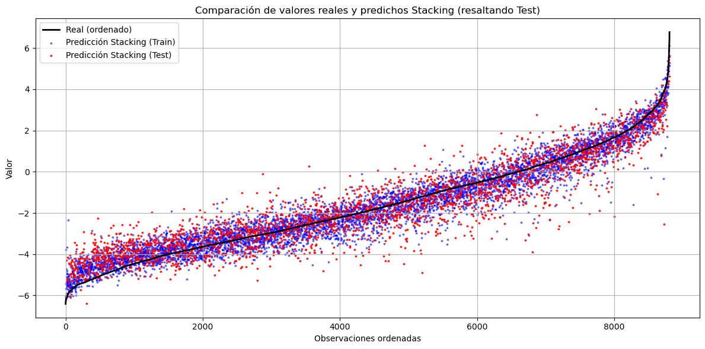
Tabla de métricas#
import pandas as pd
import numpy as np
from sklearn.metrics import mean_absolute_percentage_error, mean_squared_error, r2_score,mean_absolute_error
from scipy.stats import jarque_bera
from statsmodels.stats.diagnostic import acorr_ljungbox
epsilon = 1e-6 # Pequeño valor para evitar divisiones por cero
#MAPE
mape_knn = mean_absolute_percentage_error(np.maximum(y_test, epsilon), y_pred_knn) * 100
mape_regl = mean_absolute_percentage_error(np.maximum(y_test, epsilon), y_pred_reglineal) * 100
mape_ridge = mean_absolute_percentage_error(np.maximum(y_test, epsilon), y_pred_Ridge) * 100
mape_lasso = mean_absolute_percentage_error(np.maximum(y_test, epsilon), y_pred_Lasso) * 100
mape_rand = mean_absolute_percentage_error(np.maximum(y_test, epsilon), y_pred_RAND) * 100
mape_xgb = mean_absolute_percentage_error(np.maximum(y_test, epsilon), y_pred_XGB) * 100
mape_svm = mean_absolute_percentage_error(np.maximum(y_test, epsilon), y_pred_SVM) * 100
mape_stacking = mean_absolute_percentage_error(np.maximum(y_test, epsilon), y_test_pred_stacking) * 100
#MAE
mae_knn = mean_absolute_error(y_test, y_pred_knn)
mae_regl = mean_absolute_error(y_test, y_pred_reglineal)
mae_ridge = mean_absolute_error(y_test, y_pred_Ridge)
mae_lasso = mean_absolute_error(y_test, y_pred_Lasso)
mae_rand = mean_absolute_error(y_test, y_pred_RAND)
mae_xgb = mean_absolute_error(y_test, y_pred_XGB)
mae_svm = mean_absolute_error(y_test, y_pred_SVM)
mae_stacking = mean_absolute_error(y_test, y_test_pred_stacking)
#RMSE
rmse_knn = np.sqrt(mean_squared_error(y_test, y_pred_knn)) # RMSE
rmse_regl = np.sqrt(mean_squared_error(y_test, y_pred_reglineal))
rmse_ridge = np.sqrt(mean_squared_error(y_test, y_pred_Ridge))
rmse_lasso = np.sqrt(mean_squared_error(y_test, y_pred_Lasso))
rmse_rand = np.sqrt(mean_squared_error(y_test, y_pred_RAND))
rmse_xgb = np.sqrt(mean_squared_error(y_test, y_pred_XGB))
rmse_svm = np.sqrt(mean_squared_error(y_test, y_pred_SVM))
rmse_stacking = np.sqrt(mean_squared_error(y_test, y_test_pred_stacking))
#R2
r2_knn = r2_score(y_test, y_pred_knn) # R²
r2_regl = r2_score(y_test, y_pred_reglineal) # R²
r2_ridge = r2_score(y_test, y_pred_Ridge) # R²
r2_lasso = r2_score(y_test, y_pred_Lasso) # R²
r2_rand = r2_score(y_test, y_pred_RAND) # R²
r2_xgb = r2_score(y_test, y_pred_XGB)
r2_svm = r2_score(y_test, y_pred_SVM) # R²
r2_stacking = r2_score(y_test, y_test_pred_stacking) # R²
# Calcular Ljung-Box (test de autocorrelación de residuos)
residuos_knn = y_test - y_pred_knn
ljung_box_knn = acorr_ljungbox(residuos_knn, lags=1, return_df=True)['lb_pvalue'].iloc[0] # p-value
residuos_regl = y_test - y_pred_reglineal
ljung_box_regl = acorr_ljungbox(residuos_regl, lags=1, return_df=True)['lb_pvalue'].iloc[0] # p-value
residuos_ridge = y_test - y_pred_Ridge
ljung_box_ridge = acorr_ljungbox(residuos_ridge, lags=1, return_df=True)['lb_pvalue'].iloc[0] # p-value
residuos_lasso = y_test - y_pred_Lasso
ljung_box_lasso = acorr_ljungbox(residuos_lasso, lags=1, return_df=True)['lb_pvalue'].iloc[0] # p-value
residuos_rand = y_test - y_pred_RAND
ljung_box_rand = acorr_ljungbox(residuos_rand, lags=1, return_df=True)['lb_pvalue'].iloc[0] # p-value
residuos_xgb = y_test - y_pred_XGB
ljung_box_xgb = acorr_ljungbox(residuos_xgb, lags=1, return_df=True)['lb_pvalue'].iloc[0] # p-value
residuos_svm = y_test - y_pred_SVM
ljung_box_svm = acorr_ljungbox(residuos_svm, lags=1, return_df=True)['lb_pvalue'].iloc[0] # p-value
residuos_stacking = y_test - y_test_pred_stacking
ljung_box_stacking = acorr_ljungbox(residuos_stacking, lags=1, return_df=True)['lb_pvalue'].iloc[0] # p-value
# Calcular Jarque-Bera (test de normalidad de residuos)
jb_test_knn = jarque_bera(residuos_knn)
jarque_bera_knn = jb_test_knn.pvalue # p-value
jb_test_regl = jarque_bera(residuos_regl)
jarque_bera_regl = jb_test_regl.pvalue
jb_test_ridge = jarque_bera(residuos_ridge)
jarque_bera_ridge = jb_test_ridge.pvalue
jb_test_lasso = jarque_bera(residuos_lasso)
jarque_bera_lasso = jb_test_lasso.pvalue
jb_test_rand = jarque_bera(residuos_rand)
jarque_bera_rand = jb_test_rand.pvalue
jb_test_xgb = jarque_bera(residuos_xgb)
jarque_bera_xgb = jb_test_xgb.pvalue
jb_test_svm = jarque_bera(residuos_svm)
jarque_bera_svm = jb_test_svm.pvalue
jb_test_stacking = jarque_bera(residuos_stacking)
jarque_bera_stacking = jb_test_stacking.pvalue
tabla_resultados = pd.DataFrame({
'Modelo': ['K-NN','Regresión Lineal','Regresión Ridge','Regresión Lasso','Random Forest','XGBoost','SVM','Stacking'],
'MAE': [mae_knn, mae_regl, mae_ridge, mae_lasso, mae_rand, mae_xgb, mae_svm,mae_stacking],
'RMSE': [rmse_knn, rmse_regl, rmse_ridge, rmse_lasso, rmse_rand, rmse_xgb, rmse_svm,rmse_stacking],
'R²': [r2_knn, r2_regl, r2_ridge, r2_lasso, r2_rand, r2_xgb, r2_svm,r2_stacking],
'Ljung-Box p-value': [ljung_box_knn, ljung_box_regl, ljung_box_ridge, ljung_box_lasso, ljung_box_rand, ljung_box_xgb, ljung_box_svm,ljung_box_stacking],
'Jarque-Bera p-value': [jarque_bera_knn, jarque_bera_regl, jarque_bera_ridge, jarque_bera_lasso, jarque_bera_rand, jarque_bera_xgb, jarque_bera_svm,jarque_bera_stacking]
})
tabla_resultados
| Modelo | MAE | RMSE | R² | Ljung-Box p-value | Jarque-Bera p-value | |
|---|---|---|---|---|---|---|
| 0 | K-NN | 1.087727 | 1.380024 | 0.644261 | 0.278273 | 2.042609e-23 |
| 1 | Regresión Lineal | 1.091288 | 1.392489 | 0.637805 | 0.786225 | 5.794007e-38 |
| 2 | Regresión Ridge | 1.091540 | 1.393594 | 0.637230 | 0.845846 | 6.203846e-38 |
| 3 | Regresión Lasso | 1.092682 | 1.395503 | 0.636236 | 0.874495 | 9.424036e-38 |
| 4 | Random Forest | 0.889094 | 1.124339 | 0.763869 | 0.646184 | 7.348095e-23 |
| 5 | XGBoost | 0.770526 | 0.987792 | 0.817741 | 0.532367 | 7.159677e-46 |
| 6 | SVM | 0.998944 | 1.318057 | 0.675491 | 0.735189 | 1.105198e-89 |
| 7 | Stacking | 0.657735 | 0.865596 | 0.860045 | 0.944214 | 1.910119e-170 |
from statsmodels.graphics.tsaplots import plot_acf
modelos = {
"K-NN": residuos_knn,
"Regresión Lineal": residuos_regl,
"Regresión Ridge": residuos_ridge,
"Regresión Lasso": residuos_lasso,
"Random Forest": residuos_rand,
"XGBoost": residuos_xgb,
"SVM": residuos_svm
}
fig, axes = plt.subplots(len(modelos), 2, figsize=(15, 2.5 * len(modelos)))
for i, (nombre, residuos) in enumerate(modelos.items()):
# ACF de los residuos
plot_acf(residuos, ax=axes[i, 0], title=f"ACF - {nombre}")
axes[i,0].set_ylim(-0.2, 0.2) # Límite en el eje y
# Histograma de los residuos
sns.histplot(residuos, bins=20, kde=True, ax=axes[i, 1])
axes[i, 1].set_title(f"Histograma de Residuos - {nombre}")
plt.tight_layout()
plt.show()
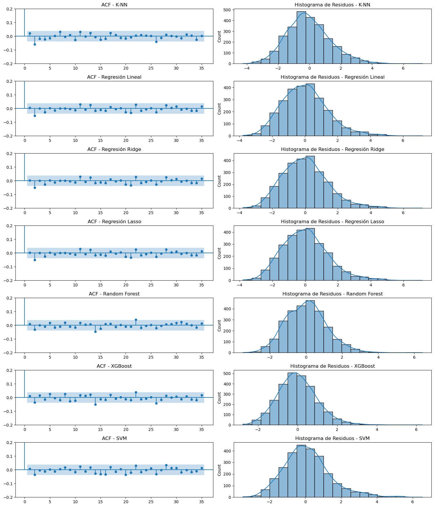
residuos_knn_total = y-y_pred_knn_todos
residuos_regl_total = y-y_pred_reglineal_todos
residuos_ridge_total = y-y_pred_Ridge_todos
residuos_lasso_total = y-y_pred_Lasso_todos
residuos_rand_total = y-y_pred_RAND_todos
residuos_xgb_total = y-y_pred_XGB_todos
residuos_svm_total = y-y_pred_SVM_todos
residuos_stacking_total = y-y_pred_stacking_todos
residuos_total = pd.DataFrame({
'K-NN': residuos_knn_total,
'Regresión Lineal': residuos_regl_total,
'Regresión Ridge': residuos_ridge_total,
'Regresión Lasso': residuos_lasso_total,
'Random Forest': residuos_rand_total,
'XGBoost': residuos_xgb_total,
'SVM': residuos_svm_total,
'Stacking': residuos_stacking_total
})
residuos_reales_largo = residuos_total.melt(var_name='Modelo', value_name='Residuos')
sns.set(style="whitegrid")
plt.figure(figsize=(12, 6))
sns.boxplot(x='Modelo', y='Residuos', data=residuos_reales_largo, palette="Set2")
plt.title('Distribución de Residuos por Modelo (CONJUNTO TOTAL)', fontsize=14)
plt.xlabel('Modelo')
plt.ylabel('Residuos')
plt.xticks(rotation=45)
plt.tight_layout()
plt.show()
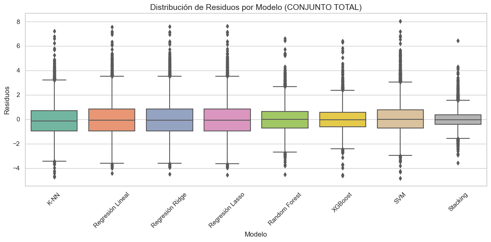
import plotly.express as px
fig = px.box(
residuos_reales_largo,
x='Modelo',
y='Residuos',
color='Modelo',
title='Distribución de Residuos por Modelo (CONJUNTO TOTAL)',
template='plotly_white',
width=1000,
height=600
)
fig.update_layout(
xaxis_title='Modelo',
yaxis_title='Residuos',
showlegend=False,
margin=dict(t=60)
)
fig.show()
residuos_total.describe().T
| count | mean | std | min | 25% | 50% | 75% | max | |
|---|---|---|---|---|---|---|---|---|
| K-NN | 8805.0 | -0.067248 | 1.291687 | -4.744875 | -0.944379 | -0.135585 | 0.713805 | 7.215986 |
| Regresión Lineal | 8805.0 | 0.004227 | 1.369959 | -4.436312 | -0.953988 | -0.074371 | 0.833482 | 7.553798 |
| Regresión Ridge | 8805.0 | 0.003882 | 1.371386 | -4.502408 | -0.954756 | -0.073938 | 0.836357 | 7.595279 |
| Regresión Lasso | 8805.0 | 0.003658 | 1.373725 | -4.544291 | -0.955886 | -0.073250 | 0.840596 | 7.619076 |
| Random Forest | 8805.0 | 0.005318 | 1.058193 | -4.515100 | -0.713661 | -0.016607 | 0.645951 | 6.613149 |
| XGBoost | 8805.0 | 0.003356 | 0.942905 | -4.634415 | -0.625020 | -0.045331 | 0.574439 | 6.401959 |
| SVM | 8805.0 | 0.103864 | 1.280459 | -4.834771 | -0.728242 | 0.001717 | 0.785092 | 8.026729 |
| Stacking | 8805.0 | -0.002406 | 0.674296 | -3.562280 | -0.412440 | -0.036079 | 0.367428 | 6.425664 |
# 1. Orden
orden = np.argsort(y)
y_real_ordenado = y[orden]
y_pred_correspondiente = y_pred_stacking_todos[orden]
# 2. Gráfica
plt.figure(figsize=(12, 6))
plt.plot(y_real_ordenado, label='Real (ordenado)', color='black', linewidth=2)
plt.scatter(range(len(y_pred_correspondiente)), y_pred_correspondiente,
label='Predicción', color='blue', s=10, alpha=0.5)
plt.title('Comparación de valores reales y predichos (con scatter)')
plt.xlabel('Observaciones ordenadas')
plt.ylabel('Valor')
plt.legend()
plt.grid(True)
plt.tight_layout()
plt.show()
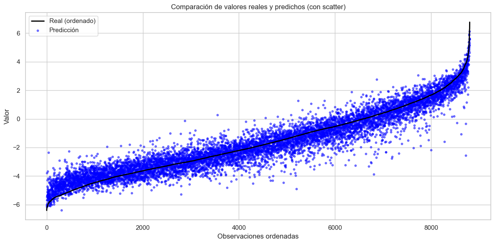
import plotly.graph_objects as go
import numpy as np
orden = np.argsort(y)
y_real_orden = y[orden]
y_real_ordenado = np.exp(y_real_orden)
y_pred_correspondiente = np.exp(y_pred_stacking_todos[orden])
# Crear figura interactiva
fig = go.Figure()
# Línea de valores reales ordenados
fig.add_trace(go.Scatter(
y=y_real_ordenado,
mode='lines',
name='Real (ordenado)',
line=dict(color='black', width=2)
))
# Puntos de predicciones correspondientes
fig.add_trace(go.Scatter(
y=y_pred_correspondiente,
mode='markers',
name='Predicción',
marker=dict(color='blue', size=4, opacity=0.5)
))
# Configuración del layout
fig.update_layout(
title='Comparación de valores reales y predichos (interactivo)',
xaxis_title='Observaciones ordenadas',
yaxis_title='Valor',
xaxis=dict(range=[0, 8000]),
yaxis=dict(range=[0, 25]),
legend=dict(x=0.01, y=0.99),
height=600,
width=1000
)
# Mostrar
fig.show()
Meta Modelos#
Meta modelo elegido#
# Definir índice para comportamiento lineal (Sa <= 0.05g)
idx_lineal = y_train <= 0.1
idx_no_lineal = y_train > 0.1
X_lineal = X_train[idx_lineal]
y_lineal = y_train[idx_lineal]
X_no_lineal = X_train[idx_no_lineal]
y_no_lineal = y_train[idx_no_lineal]
modelo_lineal = modelo_lineal = CatBoostRegressor(
)
modelo_lineal.fit(X_lineal, y_lineal)
modelo_no_lineal = lgb.LGBMRegressor(n_estimators=200, max_depth=10)
modelo_no_lineal.fit(X_no_lineal, y_no_lineal)
Learning rate set to 0.052293
0: learn: 1.5371200 total: 107ms remaining: 1m 47s
1: learn: 1.5124546 total: 110ms remaining: 54.7s
2: learn: 1.4886391 total: 113ms remaining: 37.4s
3: learn: 1.4666333 total: 115ms remaining: 28.5s
4: learn: 1.4459097 total: 117ms remaining: 23.2s
5: learn: 1.4263303 total: 119ms remaining: 19.7s
6: learn: 1.4089023 total: 121ms remaining: 17.1s
7: learn: 1.3937801 total: 123ms remaining: 15.2s
8: learn: 1.3777914 total: 125ms remaining: 13.7s
9: learn: 1.3599029 total: 127ms remaining: 12.6s
10: learn: 1.3457988 total: 129ms remaining: 11.6s
11: learn: 1.3340716 total: 131ms remaining: 10.8s
12: learn: 1.3191604 total: 133ms remaining: 10.1s
13: learn: 1.3085448 total: 135ms remaining: 9.48s
14: learn: 1.2981000 total: 137ms remaining: 8.99s
15: learn: 1.2855963 total: 139ms remaining: 8.53s
16: learn: 1.2748387 total: 140ms remaining: 8.12s
17: learn: 1.2659764 total: 142ms remaining: 7.75s
18: learn: 1.2578034 total: 144ms remaining: 7.44s
19: learn: 1.2461921 total: 146ms remaining: 7.15s
20: learn: 1.2373237 total: 148ms remaining: 6.91s
21: learn: 1.2295939 total: 150ms remaining: 6.69s
22: learn: 1.2211877 total: 152ms remaining: 6.47s
23: learn: 1.2135100 total: 154ms remaining: 6.27s
24: learn: 1.2032518 total: 156ms remaining: 6.1s
25: learn: 1.1971070 total: 158ms remaining: 5.93s
26: learn: 1.1897883 total: 160ms remaining: 5.78s
27: learn: 1.1836510 total: 162ms remaining: 5.63s
28: learn: 1.1766397 total: 164ms remaining: 5.49s
29: learn: 1.1709353 total: 165ms remaining: 5.35s
30: learn: 1.1652038 total: 167ms remaining: 5.22s
31: learn: 1.1597039 total: 168ms remaining: 5.09s
32: learn: 1.1554880 total: 170ms remaining: 4.99s
33: learn: 1.1518992 total: 172ms remaining: 4.89s
34: learn: 1.1460721 total: 174ms remaining: 4.78s
35: learn: 1.1414219 total: 175ms remaining: 4.68s
36: learn: 1.1358003 total: 177ms remaining: 4.61s
37: learn: 1.1312030 total: 179ms remaining: 4.53s
38: learn: 1.1274955 total: 180ms remaining: 4.45s
39: learn: 1.1222991 total: 182ms remaining: 4.38s
40: learn: 1.1179711 total: 184ms remaining: 4.31s
41: learn: 1.1144267 total: 186ms remaining: 4.24s
42: learn: 1.1097814 total: 188ms remaining: 4.17s
43: learn: 1.1061819 total: 190ms remaining: 4.12s
44: learn: 1.1030823 total: 191ms remaining: 4.06s
45: learn: 1.1003236 total: 193ms remaining: 4s
46: learn: 1.0971510 total: 195ms remaining: 3.95s
47: learn: 1.0944191 total: 197ms remaining: 3.9s
48: learn: 1.0909898 total: 198ms remaining: 3.85s
49: learn: 1.0888781 total: 200ms remaining: 3.8s
50: learn: 1.0839096 total: 202ms remaining: 3.75s
51: learn: 1.0811411 total: 204ms remaining: 3.72s
52: learn: 1.0775573 total: 206ms remaining: 3.68s
53: learn: 1.0737435 total: 207ms remaining: 3.63s
54: learn: 1.0715781 total: 209ms remaining: 3.6s
55: learn: 1.0683900 total: 211ms remaining: 3.56s
56: learn: 1.0653373 total: 213ms remaining: 3.52s
57: learn: 1.0625938 total: 215ms remaining: 3.49s
58: learn: 1.0600496 total: 217ms remaining: 3.46s
59: learn: 1.0570892 total: 218ms remaining: 3.42s
60: learn: 1.0534345 total: 220ms remaining: 3.38s
61: learn: 1.0519018 total: 222ms remaining: 3.35s
62: learn: 1.0496663 total: 223ms remaining: 3.32s
63: learn: 1.0476436 total: 225ms remaining: 3.29s
64: learn: 1.0460966 total: 227ms remaining: 3.26s
65: learn: 1.0441589 total: 229ms remaining: 3.23s
66: learn: 1.0403159 total: 230ms remaining: 3.21s
67: learn: 1.0383952 total: 232ms remaining: 3.17s
68: learn: 1.0356887 total: 233ms remaining: 3.15s
69: learn: 1.0337547 total: 235ms remaining: 3.12s
70: learn: 1.0319925 total: 237ms remaining: 3.1s
71: learn: 1.0297223 total: 239ms remaining: 3.08s
72: learn: 1.0284429 total: 241ms remaining: 3.06s
73: learn: 1.0253953 total: 243ms remaining: 3.04s
74: learn: 1.0242921 total: 244ms remaining: 3.01s
75: learn: 1.0225617 total: 246ms remaining: 2.99s
76: learn: 1.0200422 total: 247ms remaining: 2.96s
77: learn: 1.0184028 total: 249ms remaining: 2.95s
78: learn: 1.0168400 total: 251ms remaining: 2.92s
79: learn: 1.0150696 total: 253ms remaining: 2.9s
80: learn: 1.0132798 total: 254ms remaining: 2.89s
81: learn: 1.0114734 total: 256ms remaining: 2.87s
82: learn: 1.0104646 total: 258ms remaining: 2.85s
83: learn: 1.0076367 total: 260ms remaining: 2.83s
84: learn: 1.0060208 total: 261ms remaining: 2.81s
85: learn: 1.0032464 total: 263ms remaining: 2.8s
86: learn: 1.0009458 total: 265ms remaining: 2.78s
87: learn: 1.0006570 total: 265ms remaining: 2.75s
88: learn: 0.9994273 total: 267ms remaining: 2.73s
89: learn: 0.9966987 total: 269ms remaining: 2.72s
90: learn: 0.9950525 total: 271ms remaining: 2.71s
91: learn: 0.9935813 total: 272ms remaining: 2.69s
92: learn: 0.9920715 total: 275ms remaining: 2.69s
93: learn: 0.9899274 total: 277ms remaining: 2.67s
94: learn: 0.9884686 total: 279ms remaining: 2.65s
95: learn: 0.9863376 total: 280ms remaining: 2.64s
96: learn: 0.9850140 total: 282ms remaining: 2.63s
97: learn: 0.9834918 total: 284ms remaining: 2.62s
98: learn: 0.9825150 total: 286ms remaining: 2.61s
99: learn: 0.9809708 total: 288ms remaining: 2.59s
100: learn: 0.9781695 total: 290ms remaining: 2.58s
101: learn: 0.9773466 total: 291ms remaining: 2.56s
102: learn: 0.9761914 total: 293ms remaining: 2.55s
103: learn: 0.9742842 total: 295ms remaining: 2.54s
104: learn: 0.9723514 total: 296ms remaining: 2.52s
105: learn: 0.9715411 total: 298ms remaining: 2.51s
106: learn: 0.9700059 total: 299ms remaining: 2.5s
107: learn: 0.9685653 total: 301ms remaining: 2.49s
108: learn: 0.9667909 total: 303ms remaining: 2.48s
109: learn: 0.9655844 total: 305ms remaining: 2.46s
110: learn: 0.9647417 total: 306ms remaining: 2.45s
111: learn: 0.9634511 total: 308ms remaining: 2.44s
112: learn: 0.9609258 total: 310ms remaining: 2.43s
113: learn: 0.9602206 total: 311ms remaining: 2.42s
114: learn: 0.9595032 total: 313ms remaining: 2.41s
115: learn: 0.9579586 total: 315ms remaining: 2.4s
116: learn: 0.9567102 total: 317ms remaining: 2.39s
117: learn: 0.9547187 total: 318ms remaining: 2.38s
118: learn: 0.9535435 total: 320ms remaining: 2.37s
119: learn: 0.9524453 total: 322ms remaining: 2.36s
120: learn: 0.9517880 total: 323ms remaining: 2.35s
121: learn: 0.9504952 total: 325ms remaining: 2.34s
122: learn: 0.9483566 total: 327ms remaining: 2.33s
123: learn: 0.9473633 total: 329ms remaining: 2.32s
124: learn: 0.9461040 total: 330ms remaining: 2.31s
125: learn: 0.9444806 total: 332ms remaining: 2.3s
126: learn: 0.9419167 total: 334ms remaining: 2.29s
127: learn: 0.9408417 total: 336ms remaining: 2.29s
128: learn: 0.9397855 total: 338ms remaining: 2.28s
129: learn: 0.9383119 total: 340ms remaining: 2.28s
130: learn: 0.9376550 total: 342ms remaining: 2.27s
131: learn: 0.9364593 total: 345ms remaining: 2.27s
132: learn: 0.9357222 total: 347ms remaining: 2.26s
133: learn: 0.9332865 total: 349ms remaining: 2.26s
134: learn: 0.9325930 total: 353ms remaining: 2.26s
135: learn: 0.9309568 total: 355ms remaining: 2.25s
136: learn: 0.9300408 total: 357ms remaining: 2.25s
137: learn: 0.9285399 total: 359ms remaining: 2.24s
138: learn: 0.9277381 total: 361ms remaining: 2.23s
139: learn: 0.9265928 total: 363ms remaining: 2.23s
140: learn: 0.9260896 total: 366ms remaining: 2.23s
141: learn: 0.9253436 total: 368ms remaining: 2.22s
142: learn: 0.9245196 total: 370ms remaining: 2.21s
143: learn: 0.9228002 total: 372ms remaining: 2.21s
144: learn: 0.9206887 total: 374ms remaining: 2.21s
145: learn: 0.9197180 total: 376ms remaining: 2.2s
146: learn: 0.9189835 total: 379ms remaining: 2.2s
147: learn: 0.9172767 total: 381ms remaining: 2.19s
148: learn: 0.9164843 total: 383ms remaining: 2.19s
149: learn: 0.9155626 total: 387ms remaining: 2.19s
150: learn: 0.9147793 total: 389ms remaining: 2.19s
151: learn: 0.9137050 total: 391ms remaining: 2.18s
152: learn: 0.9131014 total: 394ms remaining: 2.18s
153: learn: 0.9121906 total: 396ms remaining: 2.17s
154: learn: 0.9114257 total: 399ms remaining: 2.17s
155: learn: 0.9101179 total: 401ms remaining: 2.17s
156: learn: 0.9093125 total: 403ms remaining: 2.16s
157: learn: 0.9086037 total: 405ms remaining: 2.16s
158: learn: 0.9078733 total: 407ms remaining: 2.15s
159: learn: 0.9071301 total: 409ms remaining: 2.15s
160: learn: 0.9064926 total: 412ms remaining: 2.15s
161: learn: 0.9042664 total: 414ms remaining: 2.14s
162: learn: 0.9034580 total: 417ms remaining: 2.14s
163: learn: 0.9026694 total: 419ms remaining: 2.14s
164: learn: 0.9016781 total: 421ms remaining: 2.13s
165: learn: 0.9006612 total: 423ms remaining: 2.13s
166: learn: 0.8999306 total: 426ms remaining: 2.12s
167: learn: 0.8991205 total: 428ms remaining: 2.12s
168: learn: 0.8975810 total: 430ms remaining: 2.11s
169: learn: 0.8969079 total: 432ms remaining: 2.11s
170: learn: 0.8958613 total: 434ms remaining: 2.1s
171: learn: 0.8950501 total: 436ms remaining: 2.1s
172: learn: 0.8943092 total: 439ms remaining: 2.1s
173: learn: 0.8933773 total: 442ms remaining: 2.1s
174: learn: 0.8922542 total: 445ms remaining: 2.1s
175: learn: 0.8913701 total: 447ms remaining: 2.09s
176: learn: 0.8900081 total: 450ms remaining: 2.09s
177: learn: 0.8891197 total: 452ms remaining: 2.09s
178: learn: 0.8876811 total: 454ms remaining: 2.08s
179: learn: 0.8866679 total: 456ms remaining: 2.08s
180: learn: 0.8852913 total: 458ms remaining: 2.07s
181: learn: 0.8845149 total: 461ms remaining: 2.07s
182: learn: 0.8836784 total: 463ms remaining: 2.07s
183: learn: 0.8828795 total: 465ms remaining: 2.06s
184: learn: 0.8821637 total: 467ms remaining: 2.06s
185: learn: 0.8809506 total: 470ms remaining: 2.06s
186: learn: 0.8801488 total: 472ms remaining: 2.05s
187: learn: 0.8793092 total: 474ms remaining: 2.05s
188: learn: 0.8787859 total: 476ms remaining: 2.04s
189: learn: 0.8778968 total: 478ms remaining: 2.04s
190: learn: 0.8769959 total: 480ms remaining: 2.03s
191: learn: 0.8761249 total: 482ms remaining: 2.03s
192: learn: 0.8750818 total: 484ms remaining: 2.02s
193: learn: 0.8745112 total: 486ms remaining: 2.02s
194: learn: 0.8739216 total: 488ms remaining: 2.01s
195: learn: 0.8731460 total: 490ms remaining: 2.01s
196: learn: 0.8723984 total: 493ms remaining: 2.01s
197: learn: 0.8713115 total: 495ms remaining: 2s
198: learn: 0.8703125 total: 497ms remaining: 2s
199: learn: 0.8695468 total: 499ms remaining: 1.99s
200: learn: 0.8689639 total: 501ms remaining: 1.99s
201: learn: 0.8674129 total: 503ms remaining: 1.99s
202: learn: 0.8665635 total: 505ms remaining: 1.98s
203: learn: 0.8654938 total: 507ms remaining: 1.98s
204: learn: 0.8647396 total: 509ms remaining: 1.97s
205: learn: 0.8639178 total: 511ms remaining: 1.97s
206: learn: 0.8631197 total: 512ms remaining: 1.96s
207: learn: 0.8621986 total: 514ms remaining: 1.96s
208: learn: 0.8618302 total: 516ms remaining: 1.95s
209: learn: 0.8610697 total: 518ms remaining: 1.95s
210: learn: 0.8606216 total: 520ms remaining: 1.94s
211: learn: 0.8598195 total: 522ms remaining: 1.94s
212: learn: 0.8590595 total: 524ms remaining: 1.93s
213: learn: 0.8579297 total: 525ms remaining: 1.93s
214: learn: 0.8566456 total: 527ms remaining: 1.92s
215: learn: 0.8558736 total: 529ms remaining: 1.92s
216: learn: 0.8552548 total: 530ms remaining: 1.91s
217: learn: 0.8545967 total: 532ms remaining: 1.91s
218: learn: 0.8538367 total: 533ms remaining: 1.9s
219: learn: 0.8532663 total: 536ms remaining: 1.9s
220: learn: 0.8526528 total: 538ms remaining: 1.89s
221: learn: 0.8519923 total: 540ms remaining: 1.89s
222: learn: 0.8514495 total: 542ms remaining: 1.89s
223: learn: 0.8505452 total: 544ms remaining: 1.89s
224: learn: 0.8494420 total: 546ms remaining: 1.88s
225: learn: 0.8484106 total: 548ms remaining: 1.88s
226: learn: 0.8475637 total: 550ms remaining: 1.87s
227: learn: 0.8469107 total: 552ms remaining: 1.87s
228: learn: 0.8460865 total: 554ms remaining: 1.86s
229: learn: 0.8455413 total: 555ms remaining: 1.86s
230: learn: 0.8447784 total: 557ms remaining: 1.85s
231: learn: 0.8442957 total: 559ms remaining: 1.85s
232: learn: 0.8434087 total: 561ms remaining: 1.85s
233: learn: 0.8426266 total: 563ms remaining: 1.84s
234: learn: 0.8420165 total: 564ms remaining: 1.84s
235: learn: 0.8411639 total: 566ms remaining: 1.83s
236: learn: 0.8406584 total: 568ms remaining: 1.83s
237: learn: 0.8395428 total: 570ms remaining: 1.82s
238: learn: 0.8387649 total: 572ms remaining: 1.82s
239: learn: 0.8383033 total: 575ms remaining: 1.82s
240: learn: 0.8375026 total: 578ms remaining: 1.82s
241: learn: 0.8368608 total: 581ms remaining: 1.82s
242: learn: 0.8362207 total: 583ms remaining: 1.82s
243: learn: 0.8356835 total: 585ms remaining: 1.81s
244: learn: 0.8350490 total: 587ms remaining: 1.81s
245: learn: 0.8341059 total: 590ms remaining: 1.81s
246: learn: 0.8335778 total: 591ms remaining: 1.8s
247: learn: 0.8326726 total: 594ms remaining: 1.8s
248: learn: 0.8321329 total: 596ms remaining: 1.8s
249: learn: 0.8312473 total: 598ms remaining: 1.79s
250: learn: 0.8303384 total: 601ms remaining: 1.79s
251: learn: 0.8294454 total: 603ms remaining: 1.79s
252: learn: 0.8282668 total: 605ms remaining: 1.79s
253: learn: 0.8272262 total: 607ms remaining: 1.78s
254: learn: 0.8265620 total: 609ms remaining: 1.78s
255: learn: 0.8259625 total: 611ms remaining: 1.77s
256: learn: 0.8253579 total: 613ms remaining: 1.77s
257: learn: 0.8248975 total: 615ms remaining: 1.77s
258: learn: 0.8234012 total: 618ms remaining: 1.77s
259: learn: 0.8226322 total: 620ms remaining: 1.76s
260: learn: 0.8222970 total: 622ms remaining: 1.76s
261: learn: 0.8218074 total: 625ms remaining: 1.76s
262: learn: 0.8208144 total: 627ms remaining: 1.76s
263: learn: 0.8202547 total: 630ms remaining: 1.75s
264: learn: 0.8198136 total: 631ms remaining: 1.75s
265: learn: 0.8190002 total: 634ms remaining: 1.75s
266: learn: 0.8185802 total: 636ms remaining: 1.75s
267: learn: 0.8181122 total: 638ms remaining: 1.74s
268: learn: 0.8176718 total: 640ms remaining: 1.74s
269: learn: 0.8169041 total: 642ms remaining: 1.74s
270: learn: 0.8165087 total: 644ms remaining: 1.73s
271: learn: 0.8160216 total: 646ms remaining: 1.73s
272: learn: 0.8154839 total: 648ms remaining: 1.73s
273: learn: 0.8147609 total: 650ms remaining: 1.72s
274: learn: 0.8140205 total: 652ms remaining: 1.72s
275: learn: 0.8129279 total: 654ms remaining: 1.72s
276: learn: 0.8123208 total: 656ms remaining: 1.71s
277: learn: 0.8118730 total: 658ms remaining: 1.71s
278: learn: 0.8105671 total: 661ms remaining: 1.71s
279: learn: 0.8099619 total: 663ms remaining: 1.7s
280: learn: 0.8095131 total: 665ms remaining: 1.7s
281: learn: 0.8088001 total: 667ms remaining: 1.7s
282: learn: 0.8079707 total: 668ms remaining: 1.69s
283: learn: 0.8077021 total: 671ms remaining: 1.69s
284: learn: 0.8067012 total: 673ms remaining: 1.69s
285: learn: 0.8059142 total: 675ms remaining: 1.69s
286: learn: 0.8054132 total: 678ms remaining: 1.68s
287: learn: 0.8050324 total: 680ms remaining: 1.68s
288: learn: 0.8041616 total: 682ms remaining: 1.68s
289: learn: 0.8036416 total: 684ms remaining: 1.67s
290: learn: 0.8028216 total: 686ms remaining: 1.67s
291: learn: 0.8024265 total: 688ms remaining: 1.67s
292: learn: 0.8017445 total: 690ms remaining: 1.67s
293: learn: 0.8010272 total: 692ms remaining: 1.66s
294: learn: 0.8003514 total: 695ms remaining: 1.66s
295: learn: 0.7996528 total: 697ms remaining: 1.66s
296: learn: 0.7991132 total: 699ms remaining: 1.66s
297: learn: 0.7986236 total: 701ms remaining: 1.65s
298: learn: 0.7977475 total: 704ms remaining: 1.65s
299: learn: 0.7969289 total: 705ms remaining: 1.65s
300: learn: 0.7961697 total: 708ms remaining: 1.64s
301: learn: 0.7957650 total: 710ms remaining: 1.64s
302: learn: 0.7953045 total: 712ms remaining: 1.64s
303: learn: 0.7949014 total: 714ms remaining: 1.63s
304: learn: 0.7940095 total: 716ms remaining: 1.63s
305: learn: 0.7935563 total: 718ms remaining: 1.63s
306: learn: 0.7931281 total: 720ms remaining: 1.62s
307: learn: 0.7925947 total: 722ms remaining: 1.62s
308: learn: 0.7919395 total: 724ms remaining: 1.62s
309: learn: 0.7914909 total: 726ms remaining: 1.61s
310: learn: 0.7908335 total: 728ms remaining: 1.61s
311: learn: 0.7902755 total: 730ms remaining: 1.61s
312: learn: 0.7896257 total: 732ms remaining: 1.61s
313: learn: 0.7891027 total: 734ms remaining: 1.6s
314: learn: 0.7886370 total: 735ms remaining: 1.6s
315: learn: 0.7880448 total: 737ms remaining: 1.59s
316: learn: 0.7877470 total: 740ms remaining: 1.59s
317: learn: 0.7872281 total: 741ms remaining: 1.59s
318: learn: 0.7862088 total: 743ms remaining: 1.59s
319: learn: 0.7853958 total: 745ms remaining: 1.58s
320: learn: 0.7849846 total: 748ms remaining: 1.58s
321: learn: 0.7842975 total: 750ms remaining: 1.58s
322: learn: 0.7835308 total: 752ms remaining: 1.58s
323: learn: 0.7829170 total: 755ms remaining: 1.57s
324: learn: 0.7825433 total: 758ms remaining: 1.57s
325: learn: 0.7820720 total: 760ms remaining: 1.57s
326: learn: 0.7815522 total: 763ms remaining: 1.57s
327: learn: 0.7810190 total: 766ms remaining: 1.57s
328: learn: 0.7804285 total: 768ms remaining: 1.56s
329: learn: 0.7800053 total: 771ms remaining: 1.57s
330: learn: 0.7798079 total: 773ms remaining: 1.56s
331: learn: 0.7792430 total: 776ms remaining: 1.56s
332: learn: 0.7788311 total: 779ms remaining: 1.56s
333: learn: 0.7785028 total: 781ms remaining: 1.56s
334: learn: 0.7781771 total: 783ms remaining: 1.55s
335: learn: 0.7775183 total: 785ms remaining: 1.55s
336: learn: 0.7770672 total: 787ms remaining: 1.55s
337: learn: 0.7766329 total: 789ms remaining: 1.54s
338: learn: 0.7763578 total: 797ms remaining: 1.55s
339: learn: 0.7755088 total: 804ms remaining: 1.56s
340: learn: 0.7749795 total: 810ms remaining: 1.56s
341: learn: 0.7746116 total: 816ms remaining: 1.57s
342: learn: 0.7742490 total: 821ms remaining: 1.57s
343: learn: 0.7736865 total: 824ms remaining: 1.57s
344: learn: 0.7731338 total: 826ms remaining: 1.57s
345: learn: 0.7727259 total: 828ms remaining: 1.56s
346: learn: 0.7721917 total: 830ms remaining: 1.56s
347: learn: 0.7713345 total: 835ms remaining: 1.56s
348: learn: 0.7707724 total: 839ms remaining: 1.56s
349: learn: 0.7703946 total: 842ms remaining: 1.56s
350: learn: 0.7700594 total: 844ms remaining: 1.56s
351: learn: 0.7695327 total: 846ms remaining: 1.56s
352: learn: 0.7689843 total: 848ms remaining: 1.55s
353: learn: 0.7684373 total: 851ms remaining: 1.55s
354: learn: 0.7680636 total: 853ms remaining: 1.55s
355: learn: 0.7672858 total: 855ms remaining: 1.55s
356: learn: 0.7667046 total: 857ms remaining: 1.54s
357: learn: 0.7662064 total: 859ms remaining: 1.54s
358: learn: 0.7659758 total: 861ms remaining: 1.54s
359: learn: 0.7650411 total: 863ms remaining: 1.53s
360: learn: 0.7644585 total: 865ms remaining: 1.53s
361: learn: 0.7637407 total: 867ms remaining: 1.53s
362: learn: 0.7633361 total: 869ms remaining: 1.52s
363: learn: 0.7630396 total: 871ms remaining: 1.52s
364: learn: 0.7622814 total: 873ms remaining: 1.52s
365: learn: 0.7617885 total: 875ms remaining: 1.51s
366: learn: 0.7613419 total: 877ms remaining: 1.51s
367: learn: 0.7610091 total: 879ms remaining: 1.51s
368: learn: 0.7606172 total: 880ms remaining: 1.5s
369: learn: 0.7600213 total: 882ms remaining: 1.5s
370: learn: 0.7595524 total: 884ms remaining: 1.5s
371: learn: 0.7592576 total: 886ms remaining: 1.5s
372: learn: 0.7589834 total: 888ms remaining: 1.49s
373: learn: 0.7585727 total: 890ms remaining: 1.49s
374: learn: 0.7577685 total: 891ms remaining: 1.49s
375: learn: 0.7573804 total: 893ms remaining: 1.48s
376: learn: 0.7571473 total: 895ms remaining: 1.48s
377: learn: 0.7567071 total: 897ms remaining: 1.48s
378: learn: 0.7561966 total: 899ms remaining: 1.47s
379: learn: 0.7556116 total: 901ms remaining: 1.47s
380: learn: 0.7551972 total: 902ms remaining: 1.47s
381: learn: 0.7548687 total: 904ms remaining: 1.46s
382: learn: 0.7542605 total: 906ms remaining: 1.46s
383: learn: 0.7536744 total: 907ms remaining: 1.46s
384: learn: 0.7534168 total: 909ms remaining: 1.45s
385: learn: 0.7530034 total: 911ms remaining: 1.45s
386: learn: 0.7526172 total: 913ms remaining: 1.45s
387: learn: 0.7519584 total: 915ms remaining: 1.44s
388: learn: 0.7513559 total: 916ms remaining: 1.44s
389: learn: 0.7509020 total: 918ms remaining: 1.44s
390: learn: 0.7508038 total: 920ms remaining: 1.43s
391: learn: 0.7501367 total: 921ms remaining: 1.43s
392: learn: 0.7497561 total: 923ms remaining: 1.43s
393: learn: 0.7490062 total: 925ms remaining: 1.42s
394: learn: 0.7481032 total: 927ms remaining: 1.42s
395: learn: 0.7475806 total: 929ms remaining: 1.42s
396: learn: 0.7471099 total: 931ms remaining: 1.41s
397: learn: 0.7465519 total: 933ms remaining: 1.41s
398: learn: 0.7462933 total: 934ms remaining: 1.41s
399: learn: 0.7459313 total: 936ms remaining: 1.4s
400: learn: 0.7455322 total: 938ms remaining: 1.4s
401: learn: 0.7451959 total: 939ms remaining: 1.4s
402: learn: 0.7447581 total: 941ms remaining: 1.39s
403: learn: 0.7443596 total: 943ms remaining: 1.39s
404: learn: 0.7439453 total: 945ms remaining: 1.39s
405: learn: 0.7435880 total: 947ms remaining: 1.39s
406: learn: 0.7428929 total: 949ms remaining: 1.38s
407: learn: 0.7424634 total: 951ms remaining: 1.38s
408: learn: 0.7418277 total: 952ms remaining: 1.38s
409: learn: 0.7415126 total: 954ms remaining: 1.37s
410: learn: 0.7413667 total: 956ms remaining: 1.37s
411: learn: 0.7410412 total: 958ms remaining: 1.37s
412: learn: 0.7406435 total: 961ms remaining: 1.36s
413: learn: 0.7402084 total: 963ms remaining: 1.36s
414: learn: 0.7396550 total: 965ms remaining: 1.36s
415: learn: 0.7392809 total: 967ms remaining: 1.36s
416: learn: 0.7391217 total: 968ms remaining: 1.35s
417: learn: 0.7388100 total: 971ms remaining: 1.35s
418: learn: 0.7384683 total: 973ms remaining: 1.35s
419: learn: 0.7380904 total: 975ms remaining: 1.35s
420: learn: 0.7375685 total: 978ms remaining: 1.34s
421: learn: 0.7371677 total: 980ms remaining: 1.34s
422: learn: 0.7367366 total: 982ms remaining: 1.34s
423: learn: 0.7363388 total: 983ms remaining: 1.34s
424: learn: 0.7359428 total: 985ms remaining: 1.33s
425: learn: 0.7353612 total: 988ms remaining: 1.33s
426: learn: 0.7349042 total: 990ms remaining: 1.33s
427: learn: 0.7346147 total: 992ms remaining: 1.32s
428: learn: 0.7341808 total: 994ms remaining: 1.32s
429: learn: 0.7334343 total: 996ms remaining: 1.32s
430: learn: 0.7330172 total: 997ms remaining: 1.32s
431: learn: 0.7327110 total: 999ms remaining: 1.31s
432: learn: 0.7324897 total: 1s remaining: 1.31s
433: learn: 0.7322928 total: 1s remaining: 1.31s
434: learn: 0.7317238 total: 1s remaining: 1.3s
435: learn: 0.7313809 total: 1s remaining: 1.3s
436: learn: 0.7311008 total: 1.01s remaining: 1.3s
437: learn: 0.7305582 total: 1.01s remaining: 1.29s
438: learn: 0.7299342 total: 1.01s remaining: 1.29s
439: learn: 0.7295891 total: 1.01s remaining: 1.29s
440: learn: 0.7292173 total: 1.01s remaining: 1.28s
441: learn: 0.7288285 total: 1.02s remaining: 1.28s
442: learn: 0.7284999 total: 1.02s remaining: 1.28s
443: learn: 0.7279163 total: 1.02s remaining: 1.28s
444: learn: 0.7275603 total: 1.02s remaining: 1.27s
445: learn: 0.7271705 total: 1.02s remaining: 1.27s
446: learn: 0.7269840 total: 1.02s remaining: 1.27s
447: learn: 0.7266916 total: 1.03s remaining: 1.26s
448: learn: 0.7260134 total: 1.03s remaining: 1.26s
449: learn: 0.7256172 total: 1.03s remaining: 1.26s
450: learn: 0.7250882 total: 1.03s remaining: 1.25s
451: learn: 0.7246711 total: 1.03s remaining: 1.25s
452: learn: 0.7243601 total: 1.03s remaining: 1.25s
453: learn: 0.7236798 total: 1.04s remaining: 1.25s
454: learn: 0.7232472 total: 1.04s remaining: 1.24s
455: learn: 0.7228242 total: 1.04s remaining: 1.24s
456: learn: 0.7223496 total: 1.04s remaining: 1.24s
457: learn: 0.7218527 total: 1.04s remaining: 1.23s
458: learn: 0.7215288 total: 1.04s remaining: 1.23s
459: learn: 0.7212497 total: 1.05s remaining: 1.23s
460: learn: 0.7208523 total: 1.05s remaining: 1.23s
461: learn: 0.7205275 total: 1.05s remaining: 1.22s
462: learn: 0.7199902 total: 1.05s remaining: 1.22s
463: learn: 0.7195162 total: 1.05s remaining: 1.22s
464: learn: 0.7192857 total: 1.06s remaining: 1.22s
465: learn: 0.7189357 total: 1.06s remaining: 1.21s
466: learn: 0.7183550 total: 1.06s remaining: 1.21s
467: learn: 0.7179372 total: 1.06s remaining: 1.21s
468: learn: 0.7175168 total: 1.06s remaining: 1.2s
469: learn: 0.7170522 total: 1.07s remaining: 1.2s
470: learn: 0.7167018 total: 1.07s remaining: 1.2s
471: learn: 0.7162065 total: 1.07s remaining: 1.2s
472: learn: 0.7156668 total: 1.07s remaining: 1.19s
473: learn: 0.7153986 total: 1.07s remaining: 1.19s
474: learn: 0.7149358 total: 1.07s remaining: 1.19s
475: learn: 0.7146005 total: 1.08s remaining: 1.19s
476: learn: 0.7141673 total: 1.08s remaining: 1.18s
477: learn: 0.7136105 total: 1.08s remaining: 1.18s
478: learn: 0.7133223 total: 1.08s remaining: 1.18s
479: learn: 0.7130864 total: 1.08s remaining: 1.17s
480: learn: 0.7127907 total: 1.08s remaining: 1.17s
481: learn: 0.7124346 total: 1.09s remaining: 1.17s
482: learn: 0.7121344 total: 1.09s remaining: 1.17s
483: learn: 0.7117396 total: 1.09s remaining: 1.16s
484: learn: 0.7110647 total: 1.09s remaining: 1.16s
485: learn: 0.7107671 total: 1.09s remaining: 1.16s
486: learn: 0.7103651 total: 1.1s remaining: 1.15s
487: learn: 0.7099903 total: 1.1s remaining: 1.15s
488: learn: 0.7092831 total: 1.1s remaining: 1.15s
489: learn: 0.7090439 total: 1.1s remaining: 1.15s
490: learn: 0.7086128 total: 1.1s remaining: 1.14s
491: learn: 0.7082949 total: 1.1s remaining: 1.14s
492: learn: 0.7079152 total: 1.11s remaining: 1.14s
493: learn: 0.7075442 total: 1.11s remaining: 1.13s
494: learn: 0.7072229 total: 1.11s remaining: 1.13s
495: learn: 0.7067827 total: 1.11s remaining: 1.13s
496: learn: 0.7063273 total: 1.11s remaining: 1.13s
497: learn: 0.7059818 total: 1.11s remaining: 1.12s
498: learn: 0.7056190 total: 1.12s remaining: 1.12s
499: learn: 0.7052627 total: 1.12s remaining: 1.12s
500: learn: 0.7048972 total: 1.12s remaining: 1.12s
501: learn: 0.7045889 total: 1.12s remaining: 1.11s
502: learn: 0.7043705 total: 1.12s remaining: 1.11s
503: learn: 0.7040026 total: 1.13s remaining: 1.11s
504: learn: 0.7036923 total: 1.13s remaining: 1.1s
505: learn: 0.7033436 total: 1.13s remaining: 1.1s
506: learn: 0.7029424 total: 1.13s remaining: 1.1s
507: learn: 0.7025758 total: 1.13s remaining: 1.1s
508: learn: 0.7022466 total: 1.13s remaining: 1.09s
509: learn: 0.7019323 total: 1.14s remaining: 1.09s
510: learn: 0.7014769 total: 1.14s remaining: 1.09s
511: learn: 0.7012076 total: 1.14s remaining: 1.09s
512: learn: 0.7007120 total: 1.14s remaining: 1.08s
513: learn: 0.7004415 total: 1.14s remaining: 1.08s
514: learn: 0.7002538 total: 1.15s remaining: 1.08s
515: learn: 0.6999643 total: 1.15s remaining: 1.08s
516: learn: 0.6996276 total: 1.15s remaining: 1.07s
517: learn: 0.6990095 total: 1.15s remaining: 1.07s
518: learn: 0.6986348 total: 1.15s remaining: 1.07s
519: learn: 0.6982787 total: 1.15s remaining: 1.06s
520: learn: 0.6979452 total: 1.16s remaining: 1.06s
521: learn: 0.6976648 total: 1.16s remaining: 1.06s
522: learn: 0.6973152 total: 1.16s remaining: 1.06s
523: learn: 0.6968852 total: 1.16s remaining: 1.05s
524: learn: 0.6964489 total: 1.16s remaining: 1.05s
525: learn: 0.6960837 total: 1.17s remaining: 1.05s
526: learn: 0.6958325 total: 1.17s remaining: 1.05s
527: learn: 0.6954156 total: 1.17s remaining: 1.04s
528: learn: 0.6949024 total: 1.17s remaining: 1.04s
529: learn: 0.6945782 total: 1.17s remaining: 1.04s
530: learn: 0.6943735 total: 1.17s remaining: 1.04s
531: learn: 0.6939511 total: 1.18s remaining: 1.03s
532: learn: 0.6934935 total: 1.18s remaining: 1.03s
533: learn: 0.6930317 total: 1.18s remaining: 1.03s
534: learn: 0.6926419 total: 1.18s remaining: 1.03s
535: learn: 0.6920228 total: 1.18s remaining: 1.02s
536: learn: 0.6917051 total: 1.18s remaining: 1.02s
537: learn: 0.6911318 total: 1.19s remaining: 1.02s
538: learn: 0.6908459 total: 1.19s remaining: 1.01s
539: learn: 0.6904107 total: 1.19s remaining: 1.01s
540: learn: 0.6898569 total: 1.19s remaining: 1.01s
541: learn: 0.6895800 total: 1.19s remaining: 1.01s
542: learn: 0.6893295 total: 1.19s remaining: 1s
543: learn: 0.6890833 total: 1.2s remaining: 1s
544: learn: 0.6884776 total: 1.2s remaining: 1000ms
545: learn: 0.6881541 total: 1.2s remaining: 998ms
546: learn: 0.6875012 total: 1.2s remaining: 995ms
547: learn: 0.6870009 total: 1.2s remaining: 992ms
548: learn: 0.6866016 total: 1.2s remaining: 990ms
549: learn: 0.6861176 total: 1.21s remaining: 987ms
550: learn: 0.6855896 total: 1.21s remaining: 985ms
551: learn: 0.6850562 total: 1.21s remaining: 983ms
552: learn: 0.6848143 total: 1.21s remaining: 981ms
553: learn: 0.6845441 total: 1.22s remaining: 978ms
554: learn: 0.6843338 total: 1.22s remaining: 976ms
555: learn: 0.6840231 total: 1.22s remaining: 974ms
556: learn: 0.6837313 total: 1.22s remaining: 971ms
557: learn: 0.6834389 total: 1.22s remaining: 969ms
558: learn: 0.6830942 total: 1.22s remaining: 966ms
559: learn: 0.6827915 total: 1.23s remaining: 964ms
560: learn: 0.6824424 total: 1.23s remaining: 961ms
561: learn: 0.6821870 total: 1.23s remaining: 959ms
562: learn: 0.6815935 total: 1.23s remaining: 956ms
563: learn: 0.6813788 total: 1.23s remaining: 954ms
564: learn: 0.6811451 total: 1.24s remaining: 951ms
565: learn: 0.6807046 total: 1.24s remaining: 949ms
566: learn: 0.6803889 total: 1.24s remaining: 947ms
567: learn: 0.6801002 total: 1.24s remaining: 945ms
568: learn: 0.6797811 total: 1.24s remaining: 942ms
569: learn: 0.6795118 total: 1.25s remaining: 940ms
570: learn: 0.6791700 total: 1.25s remaining: 937ms
571: learn: 0.6787141 total: 1.25s remaining: 935ms
572: learn: 0.6783527 total: 1.25s remaining: 932ms
573: learn: 0.6780962 total: 1.25s remaining: 930ms
574: learn: 0.6775448 total: 1.25s remaining: 927ms
575: learn: 0.6770924 total: 1.26s remaining: 925ms
576: learn: 0.6768570 total: 1.26s remaining: 922ms
577: learn: 0.6763064 total: 1.26s remaining: 920ms
578: learn: 0.6757556 total: 1.26s remaining: 917ms
579: learn: 0.6753170 total: 1.26s remaining: 915ms
580: learn: 0.6749924 total: 1.26s remaining: 912ms
581: learn: 0.6746402 total: 1.27s remaining: 909ms
582: learn: 0.6742768 total: 1.27s remaining: 907ms
583: learn: 0.6739752 total: 1.27s remaining: 904ms
584: learn: 0.6736261 total: 1.27s remaining: 902ms
585: learn: 0.6733463 total: 1.27s remaining: 900ms
586: learn: 0.6730606 total: 1.27s remaining: 897ms
587: learn: 0.6726914 total: 1.28s remaining: 895ms
588: learn: 0.6724443 total: 1.28s remaining: 892ms
589: learn: 0.6721295 total: 1.28s remaining: 890ms
590: learn: 0.6715717 total: 1.28s remaining: 888ms
591: learn: 0.6713407 total: 1.28s remaining: 885ms
592: learn: 0.6710845 total: 1.29s remaining: 883ms
593: learn: 0.6705843 total: 1.29s remaining: 881ms
594: learn: 0.6703085 total: 1.29s remaining: 879ms
595: learn: 0.6699497 total: 1.29s remaining: 876ms
596: learn: 0.6696881 total: 1.29s remaining: 873ms
597: learn: 0.6692077 total: 1.29s remaining: 871ms
598: learn: 0.6689329 total: 1.3s remaining: 869ms
599: learn: 0.6686050 total: 1.3s remaining: 866ms
600: learn: 0.6682177 total: 1.3s remaining: 864ms
601: learn: 0.6679577 total: 1.3s remaining: 862ms
602: learn: 0.6674550 total: 1.3s remaining: 859ms
603: learn: 0.6672032 total: 1.31s remaining: 857ms
604: learn: 0.6669329 total: 1.31s remaining: 854ms
605: learn: 0.6664839 total: 1.31s remaining: 852ms
606: learn: 0.6659780 total: 1.31s remaining: 849ms
607: learn: 0.6654866 total: 1.31s remaining: 847ms
608: learn: 0.6649896 total: 1.31s remaining: 844ms
609: learn: 0.6645834 total: 1.32s remaining: 842ms
610: learn: 0.6642629 total: 1.32s remaining: 840ms
611: learn: 0.6639221 total: 1.32s remaining: 838ms
612: learn: 0.6636427 total: 1.32s remaining: 835ms
613: learn: 0.6633458 total: 1.32s remaining: 833ms
614: learn: 0.6628624 total: 1.33s remaining: 831ms
615: learn: 0.6626517 total: 1.33s remaining: 829ms
616: learn: 0.6623696 total: 1.33s remaining: 827ms
617: learn: 0.6620378 total: 1.33s remaining: 824ms
618: learn: 0.6615959 total: 1.33s remaining: 822ms
619: learn: 0.6613928 total: 1.34s remaining: 820ms
620: learn: 0.6611059 total: 1.34s remaining: 817ms
621: learn: 0.6607830 total: 1.34s remaining: 815ms
622: learn: 0.6602875 total: 1.34s remaining: 813ms
623: learn: 0.6600389 total: 1.34s remaining: 810ms
624: learn: 0.6598208 total: 1.34s remaining: 808ms
625: learn: 0.6595268 total: 1.35s remaining: 805ms
626: learn: 0.6592340 total: 1.35s remaining: 803ms
627: learn: 0.6589597 total: 1.35s remaining: 800ms
628: learn: 0.6587763 total: 1.35s remaining: 798ms
629: learn: 0.6585068 total: 1.35s remaining: 795ms
630: learn: 0.6581961 total: 1.36s remaining: 793ms
631: learn: 0.6578290 total: 1.36s remaining: 791ms
632: learn: 0.6575310 total: 1.36s remaining: 788ms
633: learn: 0.6572614 total: 1.36s remaining: 786ms
634: learn: 0.6569420 total: 1.36s remaining: 784ms
635: learn: 0.6566043 total: 1.36s remaining: 781ms
636: learn: 0.6562097 total: 1.37s remaining: 779ms
637: learn: 0.6558961 total: 1.37s remaining: 776ms
638: learn: 0.6556544 total: 1.37s remaining: 774ms
639: learn: 0.6552573 total: 1.37s remaining: 771ms
640: learn: 0.6550522 total: 1.37s remaining: 769ms
641: learn: 0.6548383 total: 1.38s remaining: 767ms
642: learn: 0.6545932 total: 1.38s remaining: 765ms
643: learn: 0.6542384 total: 1.38s remaining: 762ms
644: learn: 0.6538850 total: 1.38s remaining: 760ms
645: learn: 0.6536298 total: 1.38s remaining: 757ms
646: learn: 0.6533630 total: 1.38s remaining: 755ms
647: learn: 0.6531547 total: 1.39s remaining: 753ms
648: learn: 0.6527293 total: 1.39s remaining: 750ms
649: learn: 0.6523962 total: 1.39s remaining: 748ms
650: learn: 0.6519581 total: 1.39s remaining: 745ms
651: learn: 0.6515844 total: 1.39s remaining: 743ms
652: learn: 0.6513930 total: 1.39s remaining: 741ms
653: learn: 0.6512023 total: 1.4s remaining: 738ms
654: learn: 0.6507285 total: 1.4s remaining: 736ms
655: learn: 0.6504894 total: 1.4s remaining: 734ms
656: learn: 0.6502827 total: 1.4s remaining: 731ms
657: learn: 0.6500235 total: 1.4s remaining: 729ms
658: learn: 0.6496783 total: 1.4s remaining: 727ms
659: learn: 0.6492803 total: 1.41s remaining: 724ms
660: learn: 0.6490882 total: 1.41s remaining: 722ms
661: learn: 0.6488036 total: 1.41s remaining: 720ms
662: learn: 0.6484265 total: 1.41s remaining: 718ms
663: learn: 0.6480895 total: 1.41s remaining: 715ms
664: learn: 0.6476401 total: 1.42s remaining: 713ms
665: learn: 0.6473445 total: 1.42s remaining: 711ms
666: learn: 0.6468501 total: 1.42s remaining: 708ms
667: learn: 0.6466590 total: 1.42s remaining: 706ms
668: learn: 0.6463262 total: 1.42s remaining: 703ms
669: learn: 0.6459931 total: 1.42s remaining: 701ms
670: learn: 0.6456643 total: 1.43s remaining: 699ms
671: learn: 0.6454337 total: 1.43s remaining: 696ms
672: learn: 0.6451940 total: 1.43s remaining: 694ms
673: learn: 0.6448880 total: 1.43s remaining: 692ms
674: learn: 0.6445976 total: 1.43s remaining: 690ms
675: learn: 0.6442421 total: 1.43s remaining: 687ms
676: learn: 0.6438526 total: 1.44s remaining: 685ms
677: learn: 0.6434715 total: 1.44s remaining: 683ms
678: learn: 0.6432473 total: 1.44s remaining: 681ms
679: learn: 0.6429217 total: 1.44s remaining: 678ms
680: learn: 0.6425495 total: 1.44s remaining: 676ms
681: learn: 0.6422413 total: 1.44s remaining: 674ms
682: learn: 0.6420093 total: 1.45s remaining: 672ms
683: learn: 0.6417224 total: 1.45s remaining: 669ms
684: learn: 0.6413792 total: 1.45s remaining: 667ms
685: learn: 0.6409355 total: 1.45s remaining: 664ms
686: learn: 0.6405509 total: 1.45s remaining: 662ms
687: learn: 0.6402177 total: 1.46s remaining: 660ms
688: learn: 0.6399823 total: 1.46s remaining: 658ms
689: learn: 0.6397255 total: 1.46s remaining: 656ms
690: learn: 0.6394956 total: 1.46s remaining: 653ms
691: learn: 0.6392829 total: 1.46s remaining: 651ms
692: learn: 0.6389282 total: 1.46s remaining: 648ms
693: learn: 0.6384953 total: 1.47s remaining: 646ms
694: learn: 0.6381481 total: 1.47s remaining: 644ms
695: learn: 0.6379367 total: 1.47s remaining: 642ms
696: learn: 0.6377068 total: 1.47s remaining: 639ms
697: learn: 0.6373096 total: 1.47s remaining: 637ms
698: learn: 0.6368913 total: 1.47s remaining: 635ms
699: learn: 0.6365482 total: 1.48s remaining: 633ms
700: learn: 0.6363313 total: 1.48s remaining: 631ms
701: learn: 0.6360113 total: 1.48s remaining: 629ms
702: learn: 0.6357426 total: 1.48s remaining: 626ms
703: learn: 0.6354952 total: 1.48s remaining: 624ms
704: learn: 0.6351804 total: 1.49s remaining: 622ms
705: learn: 0.6349241 total: 1.49s remaining: 620ms
706: learn: 0.6346174 total: 1.49s remaining: 618ms
707: learn: 0.6342960 total: 1.49s remaining: 616ms
708: learn: 0.6340258 total: 1.5s remaining: 614ms
709: learn: 0.6335939 total: 1.5s remaining: 611ms
710: learn: 0.6332639 total: 1.5s remaining: 609ms
711: learn: 0.6329546 total: 1.5s remaining: 607ms
712: learn: 0.6327788 total: 1.5s remaining: 605ms
713: learn: 0.6325662 total: 1.5s remaining: 602ms
714: learn: 0.6322444 total: 1.5s remaining: 600ms
715: learn: 0.6319130 total: 1.51s remaining: 598ms
716: learn: 0.6317406 total: 1.51s remaining: 596ms
717: learn: 0.6311931 total: 1.51s remaining: 593ms
718: learn: 0.6309223 total: 1.51s remaining: 591ms
719: learn: 0.6305916 total: 1.51s remaining: 589ms
720: learn: 0.6301677 total: 1.52s remaining: 587ms
721: learn: 0.6299315 total: 1.52s remaining: 584ms
722: learn: 0.6297132 total: 1.52s remaining: 582ms
723: learn: 0.6294205 total: 1.52s remaining: 580ms
724: learn: 0.6291723 total: 1.52s remaining: 578ms
725: learn: 0.6288799 total: 1.52s remaining: 576ms
726: learn: 0.6286442 total: 1.53s remaining: 573ms
727: learn: 0.6284067 total: 1.53s remaining: 571ms
728: learn: 0.6279972 total: 1.53s remaining: 569ms
729: learn: 0.6276937 total: 1.53s remaining: 567ms
730: learn: 0.6273607 total: 1.53s remaining: 565ms
731: learn: 0.6269916 total: 1.54s remaining: 562ms
732: learn: 0.6267301 total: 1.54s remaining: 560ms
733: learn: 0.6264347 total: 1.54s remaining: 558ms
734: learn: 0.6260420 total: 1.54s remaining: 556ms
735: learn: 0.6258755 total: 1.54s remaining: 553ms
736: learn: 0.6257136 total: 1.54s remaining: 551ms
737: learn: 0.6253852 total: 1.55s remaining: 549ms
738: learn: 0.6250943 total: 1.55s remaining: 547ms
739: learn: 0.6247604 total: 1.55s remaining: 544ms
740: learn: 0.6242408 total: 1.55s remaining: 543ms
741: learn: 0.6240257 total: 1.55s remaining: 541ms
742: learn: 0.6237401 total: 1.56s remaining: 538ms
743: learn: 0.6236142 total: 1.56s remaining: 536ms
744: learn: 0.6233041 total: 1.56s remaining: 534ms
745: learn: 0.6230393 total: 1.56s remaining: 531ms
746: learn: 0.6227573 total: 1.56s remaining: 529ms
747: learn: 0.6224988 total: 1.56s remaining: 527ms
748: learn: 0.6221728 total: 1.57s remaining: 525ms
749: learn: 0.6218124 total: 1.57s remaining: 523ms
750: learn: 0.6213469 total: 1.57s remaining: 521ms
751: learn: 0.6211162 total: 1.57s remaining: 519ms
752: learn: 0.6209214 total: 1.57s remaining: 516ms
753: learn: 0.6205372 total: 1.57s remaining: 514ms
754: learn: 0.6202675 total: 1.58s remaining: 512ms
755: learn: 0.6200065 total: 1.58s remaining: 510ms
756: learn: 0.6198019 total: 1.58s remaining: 507ms
757: learn: 0.6195994 total: 1.58s remaining: 505ms
758: learn: 0.6192675 total: 1.58s remaining: 503ms
759: learn: 0.6189324 total: 1.58s remaining: 501ms
760: learn: 0.6187252 total: 1.59s remaining: 499ms
761: learn: 0.6183910 total: 1.59s remaining: 496ms
762: learn: 0.6180657 total: 1.59s remaining: 494ms
763: learn: 0.6178802 total: 1.59s remaining: 492ms
764: learn: 0.6177049 total: 1.59s remaining: 490ms
765: learn: 0.6173345 total: 1.6s remaining: 488ms
766: learn: 0.6171199 total: 1.6s remaining: 485ms
767: learn: 0.6168411 total: 1.6s remaining: 483ms
768: learn: 0.6165402 total: 1.6s remaining: 481ms
769: learn: 0.6162946 total: 1.6s remaining: 479ms
770: learn: 0.6161094 total: 1.6s remaining: 477ms
771: learn: 0.6158446 total: 1.61s remaining: 474ms
772: learn: 0.6155880 total: 1.61s remaining: 472ms
773: learn: 0.6151634 total: 1.61s remaining: 470ms
774: learn: 0.6148030 total: 1.61s remaining: 468ms
775: learn: 0.6144532 total: 1.61s remaining: 466ms
776: learn: 0.6142293 total: 1.61s remaining: 464ms
777: learn: 0.6139584 total: 1.62s remaining: 461ms
778: learn: 0.6136366 total: 1.62s remaining: 459ms
779: learn: 0.6133466 total: 1.62s remaining: 457ms
780: learn: 0.6131653 total: 1.62s remaining: 455ms
781: learn: 0.6129340 total: 1.63s remaining: 453ms
782: learn: 0.6125527 total: 1.63s remaining: 451ms
783: learn: 0.6122511 total: 1.63s remaining: 449ms
784: learn: 0.6120270 total: 1.63s remaining: 447ms
785: learn: 0.6117276 total: 1.63s remaining: 445ms
786: learn: 0.6114999 total: 1.64s remaining: 443ms
787: learn: 0.6112602 total: 1.64s remaining: 441ms
788: learn: 0.6109909 total: 1.64s remaining: 439ms
789: learn: 0.6105775 total: 1.64s remaining: 437ms
790: learn: 0.6103202 total: 1.64s remaining: 435ms
791: learn: 0.6100612 total: 1.65s remaining: 433ms
792: learn: 0.6097351 total: 1.65s remaining: 430ms
793: learn: 0.6094879 total: 1.65s remaining: 428ms
794: learn: 0.6092337 total: 1.65s remaining: 426ms
795: learn: 0.6090415 total: 1.65s remaining: 424ms
796: learn: 0.6086725 total: 1.66s remaining: 422ms
797: learn: 0.6085453 total: 1.66s remaining: 420ms
798: learn: 0.6083071 total: 1.66s remaining: 417ms
799: learn: 0.6080813 total: 1.66s remaining: 415ms
800: learn: 0.6079160 total: 1.66s remaining: 413ms
801: learn: 0.6076306 total: 1.67s remaining: 411ms
802: learn: 0.6073188 total: 1.67s remaining: 409ms
803: learn: 0.6071474 total: 1.67s remaining: 407ms
804: learn: 0.6070229 total: 1.67s remaining: 405ms
805: learn: 0.6068537 total: 1.67s remaining: 403ms
806: learn: 0.6065766 total: 1.68s remaining: 401ms
807: learn: 0.6063542 total: 1.68s remaining: 398ms
808: learn: 0.6061752 total: 1.68s remaining: 396ms
809: learn: 0.6058490 total: 1.68s remaining: 394ms
810: learn: 0.6055317 total: 1.68s remaining: 392ms
811: learn: 0.6050050 total: 1.68s remaining: 390ms
812: learn: 0.6047492 total: 1.68s remaining: 388ms
813: learn: 0.6045266 total: 1.69s remaining: 385ms
814: learn: 0.6043815 total: 1.69s remaining: 383ms
815: learn: 0.6040666 total: 1.69s remaining: 381ms
816: learn: 0.6038393 total: 1.69s remaining: 379ms
817: learn: 0.6036170 total: 1.69s remaining: 377ms
818: learn: 0.6033821 total: 1.7s remaining: 375ms
819: learn: 0.6031529 total: 1.7s remaining: 373ms
820: learn: 0.6029896 total: 1.7s remaining: 370ms
821: learn: 0.6027235 total: 1.7s remaining: 368ms
822: learn: 0.6024624 total: 1.7s remaining: 366ms
823: learn: 0.6021890 total: 1.7s remaining: 364ms
824: learn: 0.6018460 total: 1.71s remaining: 362ms
825: learn: 0.6016314 total: 1.71s remaining: 360ms
826: learn: 0.6012895 total: 1.71s remaining: 358ms
827: learn: 0.6011042 total: 1.71s remaining: 355ms
828: learn: 0.6009067 total: 1.71s remaining: 353ms
829: learn: 0.6006427 total: 1.71s remaining: 351ms
830: learn: 0.6004865 total: 1.72s remaining: 349ms
831: learn: 0.6001139 total: 1.72s remaining: 347ms
832: learn: 0.5997682 total: 1.72s remaining: 345ms
833: learn: 0.5993285 total: 1.72s remaining: 343ms
834: learn: 0.5991549 total: 1.72s remaining: 340ms
835: learn: 0.5990005 total: 1.72s remaining: 338ms
836: learn: 0.5987571 total: 1.73s remaining: 336ms
837: learn: 0.5986142 total: 1.73s remaining: 334ms
838: learn: 0.5982879 total: 1.73s remaining: 332ms
839: learn: 0.5980192 total: 1.73s remaining: 330ms
840: learn: 0.5978355 total: 1.73s remaining: 328ms
841: learn: 0.5976104 total: 1.73s remaining: 326ms
842: learn: 0.5974583 total: 1.74s remaining: 323ms
843: learn: 0.5972198 total: 1.74s remaining: 321ms
844: learn: 0.5969812 total: 1.74s remaining: 319ms
845: learn: 0.5967367 total: 1.74s remaining: 317ms
846: learn: 0.5964666 total: 1.74s remaining: 315ms
847: learn: 0.5961729 total: 1.74s remaining: 313ms
848: learn: 0.5959894 total: 1.75s remaining: 311ms
849: learn: 0.5957013 total: 1.75s remaining: 309ms
850: learn: 0.5955480 total: 1.75s remaining: 307ms
851: learn: 0.5952698 total: 1.75s remaining: 304ms
852: learn: 0.5951103 total: 1.75s remaining: 302ms
853: learn: 0.5948914 total: 1.75s remaining: 300ms
854: learn: 0.5946710 total: 1.76s remaining: 298ms
855: learn: 0.5944505 total: 1.76s remaining: 296ms
856: learn: 0.5941627 total: 1.76s remaining: 294ms
857: learn: 0.5939452 total: 1.76s remaining: 292ms
858: learn: 0.5935043 total: 1.76s remaining: 290ms
859: learn: 0.5933383 total: 1.77s remaining: 288ms
860: learn: 0.5930524 total: 1.77s remaining: 286ms
861: learn: 0.5928718 total: 1.77s remaining: 284ms
862: learn: 0.5927130 total: 1.77s remaining: 281ms
863: learn: 0.5924942 total: 1.77s remaining: 279ms
864: learn: 0.5923102 total: 1.78s remaining: 277ms
865: learn: 0.5920676 total: 1.78s remaining: 275ms
866: learn: 0.5918346 total: 1.78s remaining: 273ms
867: learn: 0.5916865 total: 1.78s remaining: 271ms
868: learn: 0.5915633 total: 1.78s remaining: 269ms
869: learn: 0.5913506 total: 1.78s remaining: 267ms
870: learn: 0.5910626 total: 1.78s remaining: 264ms
871: learn: 0.5906761 total: 1.79s remaining: 262ms
872: learn: 0.5903717 total: 1.79s remaining: 260ms
873: learn: 0.5901254 total: 1.79s remaining: 258ms
874: learn: 0.5899337 total: 1.79s remaining: 256ms
875: learn: 0.5897064 total: 1.79s remaining: 254ms
876: learn: 0.5895333 total: 1.79s remaining: 252ms
877: learn: 0.5892098 total: 1.8s remaining: 250ms
878: learn: 0.5890520 total: 1.8s remaining: 248ms
879: learn: 0.5887807 total: 1.8s remaining: 246ms
880: learn: 0.5884721 total: 1.8s remaining: 244ms
881: learn: 0.5882103 total: 1.8s remaining: 241ms
882: learn: 0.5879976 total: 1.81s remaining: 239ms
883: learn: 0.5877520 total: 1.81s remaining: 237ms
884: learn: 0.5874743 total: 1.81s remaining: 235ms
885: learn: 0.5871522 total: 1.81s remaining: 233ms
886: learn: 0.5869398 total: 1.81s remaining: 231ms
887: learn: 0.5866631 total: 1.81s remaining: 229ms
888: learn: 0.5863948 total: 1.82s remaining: 227ms
889: learn: 0.5860980 total: 1.82s remaining: 225ms
890: learn: 0.5858877 total: 1.82s remaining: 223ms
891: learn: 0.5855500 total: 1.82s remaining: 221ms
892: learn: 0.5854255 total: 1.82s remaining: 218ms
893: learn: 0.5851896 total: 1.82s remaining: 216ms
894: learn: 0.5849359 total: 1.83s remaining: 214ms
895: learn: 0.5847616 total: 1.83s remaining: 212ms
896: learn: 0.5846045 total: 1.83s remaining: 210ms
897: learn: 0.5841759 total: 1.83s remaining: 208ms
898: learn: 0.5839125 total: 1.84s remaining: 206ms
899: learn: 0.5836191 total: 1.84s remaining: 204ms
900: learn: 0.5834176 total: 1.84s remaining: 202ms
901: learn: 0.5832934 total: 1.84s remaining: 200ms
902: learn: 0.5829991 total: 1.84s remaining: 198ms
903: learn: 0.5827762 total: 1.85s remaining: 196ms
904: learn: 0.5825876 total: 1.85s remaining: 194ms
905: learn: 0.5824271 total: 1.85s remaining: 192ms
906: learn: 0.5821712 total: 1.85s remaining: 190ms
907: learn: 0.5819964 total: 1.86s remaining: 188ms
908: learn: 0.5817353 total: 1.86s remaining: 186ms
909: learn: 0.5815498 total: 1.86s remaining: 184ms
910: learn: 0.5812589 total: 1.86s remaining: 182ms
911: learn: 0.5808871 total: 1.86s remaining: 180ms
912: learn: 0.5805641 total: 1.87s remaining: 178ms
913: learn: 0.5802940 total: 1.87s remaining: 176ms
914: learn: 0.5798464 total: 1.87s remaining: 174ms
915: learn: 0.5797114 total: 1.87s remaining: 172ms
916: learn: 0.5793921 total: 1.88s remaining: 170ms
917: learn: 0.5791987 total: 1.88s remaining: 168ms
918: learn: 0.5789396 total: 1.88s remaining: 166ms
919: learn: 0.5788197 total: 1.88s remaining: 164ms
920: learn: 0.5785930 total: 1.88s remaining: 162ms
921: learn: 0.5783772 total: 1.89s remaining: 160ms
922: learn: 0.5780879 total: 1.89s remaining: 158ms
923: learn: 0.5778665 total: 1.89s remaining: 156ms
924: learn: 0.5776999 total: 1.89s remaining: 153ms
925: learn: 0.5775420 total: 1.89s remaining: 151ms
926: learn: 0.5774152 total: 1.9s remaining: 149ms
927: learn: 0.5771889 total: 1.9s remaining: 147ms
928: learn: 0.5770058 total: 1.9s remaining: 145ms
929: learn: 0.5768066 total: 1.9s remaining: 143ms
930: learn: 0.5764916 total: 1.9s remaining: 141ms
931: learn: 0.5761770 total: 1.91s remaining: 139ms
932: learn: 0.5758174 total: 1.91s remaining: 137ms
933: learn: 0.5756568 total: 1.91s remaining: 135ms
934: learn: 0.5754484 total: 1.91s remaining: 133ms
935: learn: 0.5752327 total: 1.91s remaining: 131ms
936: learn: 0.5749444 total: 1.92s remaining: 129ms
937: learn: 0.5747345 total: 1.92s remaining: 127ms
938: learn: 0.5744969 total: 1.92s remaining: 125ms
939: learn: 0.5742461 total: 1.92s remaining: 123ms
940: learn: 0.5739947 total: 1.92s remaining: 121ms
941: learn: 0.5737555 total: 1.93s remaining: 119ms
942: learn: 0.5736108 total: 1.93s remaining: 117ms
943: learn: 0.5731704 total: 1.93s remaining: 114ms
944: learn: 0.5729058 total: 1.93s remaining: 112ms
945: learn: 0.5726874 total: 1.93s remaining: 110ms
946: learn: 0.5724652 total: 1.94s remaining: 108ms
947: learn: 0.5722395 total: 1.94s remaining: 106ms
948: learn: 0.5720187 total: 1.94s remaining: 104ms
949: learn: 0.5717451 total: 1.94s remaining: 102ms
950: learn: 0.5716180 total: 1.94s remaining: 100ms
951: learn: 0.5714160 total: 1.94s remaining: 98ms
952: learn: 0.5712093 total: 1.95s remaining: 96ms
953: learn: 0.5710130 total: 1.95s remaining: 93.9ms
954: learn: 0.5707990 total: 1.95s remaining: 91.8ms
955: learn: 0.5705278 total: 1.95s remaining: 89.8ms
956: learn: 0.5703048 total: 1.95s remaining: 87.7ms
957: learn: 0.5700109 total: 1.95s remaining: 85.7ms
958: learn: 0.5698903 total: 1.96s remaining: 83.6ms
959: learn: 0.5697665 total: 1.96s remaining: 81.6ms
960: learn: 0.5695468 total: 1.96s remaining: 79.5ms
961: learn: 0.5693809 total: 1.96s remaining: 77.5ms
962: learn: 0.5690032 total: 1.96s remaining: 75.4ms
963: learn: 0.5688384 total: 1.96s remaining: 73.4ms
964: learn: 0.5686351 total: 1.97s remaining: 71.3ms
965: learn: 0.5684219 total: 1.97s remaining: 69.3ms
966: learn: 0.5682037 total: 1.97s remaining: 67.2ms
967: learn: 0.5680185 total: 1.97s remaining: 65.2ms
968: learn: 0.5677724 total: 1.97s remaining: 63.1ms
969: learn: 0.5676075 total: 1.97s remaining: 61.1ms
970: learn: 0.5674402 total: 1.98s remaining: 59ms
971: learn: 0.5672144 total: 1.98s remaining: 57ms
972: learn: 0.5669798 total: 1.98s remaining: 55ms
973: learn: 0.5667362 total: 1.98s remaining: 52.9ms
974: learn: 0.5665246 total: 1.98s remaining: 50.9ms
975: learn: 0.5661552 total: 1.99s remaining: 48.8ms
976: learn: 0.5660241 total: 1.99s remaining: 46.8ms
977: learn: 0.5657578 total: 1.99s remaining: 44.7ms
978: learn: 0.5655077 total: 1.99s remaining: 42.7ms
979: learn: 0.5652930 total: 1.99s remaining: 40.7ms
980: learn: 0.5649925 total: 1.99s remaining: 38.6ms
981: learn: 0.5647217 total: 2s remaining: 36.6ms
982: learn: 0.5645100 total: 2s remaining: 34.5ms
983: learn: 0.5643588 total: 2s remaining: 32.5ms
984: learn: 0.5640062 total: 2s remaining: 30.5ms
985: learn: 0.5638808 total: 2s remaining: 28.4ms
986: learn: 0.5636408 total: 2s remaining: 26.4ms
987: learn: 0.5634604 total: 2.01s remaining: 24.4ms
988: learn: 0.5633517 total: 2.01s remaining: 22.3ms
989: learn: 0.5632363 total: 2.01s remaining: 20.3ms
990: learn: 0.5631064 total: 2.01s remaining: 18.3ms
991: learn: 0.5627500 total: 2.01s remaining: 16.2ms
992: learn: 0.5624788 total: 2.02s remaining: 14.2ms
993: learn: 0.5623512 total: 2.02s remaining: 12.2ms
994: learn: 0.5621229 total: 2.02s remaining: 10.1ms
995: learn: 0.5617881 total: 2.02s remaining: 8.11ms
996: learn: 0.5615107 total: 2.02s remaining: 6.08ms
997: learn: 0.5613620 total: 2.02s remaining: 4.05ms
998: learn: 0.5612546 total: 2.02s remaining: 2.03ms
999: learn: 0.5610848 total: 2.03s remaining: 0us
[LightGBM] [Info] Auto-choosing col-wise multi-threading, the overhead of testing was 0.000614 seconds.
You can set `force_col_wise=true` to remove the overhead.
[LightGBM] [Info] Total Bins 2684
[LightGBM] [Info] Number of data points in the train set: 1458, number of used features: 27
[LightGBM] [Info] Start training from score 1.572096
[LightGBM] [Warning] No further splits with positive gain, best gain: -inf
[LightGBM] [Warning] No further splits with positive gain, best gain: -inf
[LightGBM] [Warning] No further splits with positive gain, best gain: -inf
[LightGBM] [Warning] No further splits with positive gain, best gain: -inf
[LightGBM] [Warning] No further splits with positive gain, best gain: -inf
[LightGBM] [Warning] No further splits with positive gain, best gain: -inf
[LightGBM] [Warning] No further splits with positive gain, best gain: -inf
[LightGBM] [Warning] No further splits with positive gain, best gain: -inf
[LightGBM] [Warning] No further splits with positive gain, best gain: -inf
[LightGBM] [Warning] No further splits with positive gain, best gain: -inf
[LightGBM] [Warning] No further splits with positive gain, best gain: -inf
[LightGBM] [Warning] No further splits with positive gain, best gain: -inf
[LightGBM] [Warning] No further splits with positive gain, best gain: -inf
[LightGBM] [Warning] No further splits with positive gain, best gain: -inf
[LightGBM] [Warning] No further splits with positive gain, best gain: -inf
[LightGBM] [Warning] No further splits with positive gain, best gain: -inf
[LightGBM] [Warning] No further splits with positive gain, best gain: -inf
[LightGBM] [Warning] No further splits with positive gain, best gain: -inf
[LightGBM] [Warning] No further splits with positive gain, best gain: -inf
[LightGBM] [Warning] No further splits with positive gain, best gain: -inf
[LightGBM] [Warning] No further splits with positive gain, best gain: -inf
[LightGBM] [Warning] No further splits with positive gain, best gain: -inf
[LightGBM] [Warning] No further splits with positive gain, best gain: -inf
[LightGBM] [Warning] No further splits with positive gain, best gain: -inf
[LightGBM] [Warning] No further splits with positive gain, best gain: -inf
[LightGBM] [Warning] No further splits with positive gain, best gain: -inf
[LightGBM] [Warning] No further splits with positive gain, best gain: -inf
[LightGBM] [Warning] No further splits with positive gain, best gain: -inf
[LightGBM] [Warning] No further splits with positive gain, best gain: -inf
[LightGBM] [Warning] No further splits with positive gain, best gain: -inf
[LightGBM] [Warning] No further splits with positive gain, best gain: -inf
[LightGBM] [Warning] No further splits with positive gain, best gain: -inf
[LightGBM] [Warning] No further splits with positive gain, best gain: -inf
[LightGBM] [Warning] No further splits with positive gain, best gain: -inf
[LightGBM] [Warning] No further splits with positive gain, best gain: -inf
[LightGBM] [Warning] No further splits with positive gain, best gain: -inf
[LightGBM] [Warning] No further splits with positive gain, best gain: -inf
[LightGBM] [Warning] No further splits with positive gain, best gain: -inf
[LightGBM] [Warning] No further splits with positive gain, best gain: -inf
[LightGBM] [Warning] No further splits with positive gain, best gain: -inf
[LightGBM] [Warning] No further splits with positive gain, best gain: -inf
[LightGBM] [Warning] No further splits with positive gain, best gain: -inf
[LightGBM] [Warning] No further splits with positive gain, best gain: -inf
[LightGBM] [Warning] No further splits with positive gain, best gain: -inf
[LightGBM] [Warning] No further splits with positive gain, best gain: -inf
[LightGBM] [Warning] No further splits with positive gain, best gain: -inf
[LightGBM] [Warning] No further splits with positive gain, best gain: -inf
[LightGBM] [Warning] No further splits with positive gain, best gain: -inf
[LightGBM] [Warning] No further splits with positive gain, best gain: -inf
[LightGBM] [Warning] No further splits with positive gain, best gain: -inf
[LightGBM] [Warning] No further splits with positive gain, best gain: -inf
[LightGBM] [Warning] No further splits with positive gain, best gain: -inf
[LightGBM] [Warning] No further splits with positive gain, best gain: -inf
[LightGBM] [Warning] No further splits with positive gain, best gain: -inf
[LightGBM] [Warning] No further splits with positive gain, best gain: -inf
[LightGBM] [Warning] No further splits with positive gain, best gain: -inf
[LightGBM] [Warning] No further splits with positive gain, best gain: -inf
[LightGBM] [Warning] No further splits with positive gain, best gain: -inf
[LightGBM] [Warning] No further splits with positive gain, best gain: -inf
[LightGBM] [Warning] No further splits with positive gain, best gain: -inf
[LightGBM] [Warning] No further splits with positive gain, best gain: -inf
[LightGBM] [Warning] No further splits with positive gain, best gain: -inf
[LightGBM] [Warning] No further splits with positive gain, best gain: -inf
[LightGBM] [Warning] No further splits with positive gain, best gain: -inf
[LightGBM] [Warning] No further splits with positive gain, best gain: -inf
[LightGBM] [Warning] No further splits with positive gain, best gain: -inf
[LightGBM] [Warning] No further splits with positive gain, best gain: -inf
[LightGBM] [Warning] No further splits with positive gain, best gain: -inf
[LightGBM] [Warning] No further splits with positive gain, best gain: -inf
[LightGBM] [Warning] No further splits with positive gain, best gain: -inf
[LightGBM] [Warning] No further splits with positive gain, best gain: -inf
[LightGBM] [Warning] No further splits with positive gain, best gain: -inf
[LightGBM] [Warning] No further splits with positive gain, best gain: -inf
[LightGBM] [Warning] No further splits with positive gain, best gain: -inf
[LightGBM] [Warning] No further splits with positive gain, best gain: -inf
[LightGBM] [Warning] No further splits with positive gain, best gain: -inf
[LightGBM] [Warning] No further splits with positive gain, best gain: -inf
[LightGBM] [Warning] No further splits with positive gain, best gain: -inf
[LightGBM] [Warning] No further splits with positive gain, best gain: -inf
[LightGBM] [Warning] No further splits with positive gain, best gain: -inf
[LightGBM] [Warning] No further splits with positive gain, best gain: -inf
[LightGBM] [Warning] No further splits with positive gain, best gain: -inf
[LightGBM] [Warning] No further splits with positive gain, best gain: -inf
[LightGBM] [Warning] No further splits with positive gain, best gain: -inf
[LightGBM] [Warning] No further splits with positive gain, best gain: -inf
[LightGBM] [Warning] No further splits with positive gain, best gain: -inf
[LightGBM] [Warning] No further splits with positive gain, best gain: -inf
LGBMRegressor(max_depth=10, n_estimators=200)In a Jupyter environment, please rerun this cell to show the HTML representation or trust the notebook.
On GitHub, the HTML representation is unable to render, please try loading this page with nbviewer.org.
LGBMRegressor(max_depth=10, n_estimators=200)
# Comportamiento real según y (log(Sa))
comportamiento_real = np.where(y <= 0.1, 'lineal', 'no_lineal')
from sklearn.ensemble import RandomForestClassifier
selector = RandomForestClassifier(n_estimators=100, random_state=0)
selector.fit(X_final, comportamiento_real)
RandomForestClassifier(random_state=0)In a Jupyter environment, please rerun this cell to show the HTML representation or trust the notebook.
On GitHub, the HTML representation is unable to render, please try loading this page with nbviewer.org.
RandomForestClassifier(random_state=0)
# Predicción del selector para cada muestra train
modelo_elegido2 = selector.predict(X_train)
# Predicciones de ambos modelos sobre train el dataset
y_pred_lineal_train = modelo_lineal.predict(X_train)
y_pred_no_lineal_train = modelo_no_lineal.predict(X_train)
# Combinar según el modelo seleccionado
y_pred_final2 = np.where(
modelo_elegido2 == 'lineal',
y_pred_lineal_train,
y_pred_no_lineal_train
)
# Predicción del selector para cada muestra test
modelo_elegido3 = selector.predict(X_test)
# Predicciones de ambos modelos sobre test el dataset
y_pred_lineal_test = modelo_lineal.predict(X_test)
y_pred_no_lineal_test = modelo_no_lineal.predict(X_test)
# Combinar según el modelo seleccionado
y_pred_final3 = np.where(
modelo_elegido3 == 'lineal',
y_pred_lineal_test,
y_pred_no_lineal_test
)
print(len(X_train), len(X_lineal),len(X_no_lineal))
print(len(X_lineal), np.sum(modelo_elegido3 == 'lineal'))
print(len(X_no_lineal), np.sum(modelo_elegido3 == 'no_lineal'))
6163 4705 1458
4705 1998
1458 644
# Predicción del selector para cada muestra total
modelo_elegido = selector.predict(X_final)
# Predicciones de ambos modelos sobre TODO el dataset
y_pred_lineal = modelo_lineal.predict(X_final)
y_pred_no_lineal = modelo_no_lineal.predict(X_final)
# Combinar según el modelo seleccionado
y_pred_final = np.where(
modelo_elegido == 'lineal',
y_pred_lineal,
y_pred_no_lineal
)
# Esto refleja lo que el modelo realmente aprendió
true_mask_lineal = y_test <= 0.1
print("R² modelo lineal en muestras verdaderamente lineales:", r2_score(y_test[true_mask_lineal], modelo_lineal.predict(X_test[true_mask_lineal])))
true_mask_no_lineal = y_test > 0.1
print("R² modelo no lineal en no lineales reales:", r2_score(y_test[true_mask_no_lineal], modelo_no_lineal.predict(X_test[true_mask_no_lineal])))
R² modelo lineal en muestras verdaderamente lineales: 0.7253693604293541
R² modelo no lineal en no lineales reales: 0.6178880188859415
from sklearn.metrics import confusion_matrix
# Comparar selector vs. etiqueta real
etiqueta_real = np.where(y_test > np.log(0.05), 'no_lineal', 'lineal')
print(confusion_matrix(etiqueta_real, modelo_elegido3, labels=['lineal', 'no_lineal']))
[[ 889 0]
[1109 644]]
print("R² lineal train:", r2_score(y_lineal, modelo_lineal.predict(X_lineal)))
print("RMSE lineal train:", root_mean_squared_error(y_lineal, modelo_lineal.predict(X_lineal)))
print("R² no lineal test:", r2_score(y_no_lineal, modelo_no_lineal.predict(X_no_lineal)))
print("RMSE no lineal test:", root_mean_squared_error(y_no_lineal, modelo_no_lineal.predict(X_no_lineal)))
R² lineal train: 0.8714381619279514
RMSE lineal train: 0.5610848232937121
R² no lineal test: 0.9684474209745709
RMSE no lineal test: 0.19866997605391878
print("R² combinado train:", r2_score(y_train, y_pred_final2))
print("RMSE combinado train:", root_mean_squared_error(y_train, y_pred_final2))
print("R² combinado test:", r2_score(y_test, y_pred_final3))
print("RMSE combinado test:", root_mean_squared_error(y_test, y_pred_final3))
print("R² combinado: total", r2_score(y, y_pred_final))
print("RMSE combinado: total", root_mean_squared_error(y, y_pred_final))
R² combinado train: 0.9539628351562047
RMSE combinado train: 0.49967651892837023
R² combinado test: 0.8822624125428489
RMSE combinado test: 0.7939226188591982
R² combinado: total 0.9326438655982691
RMSE combinado: total 0.6032322842086072
# Convertir a arrays (por si no lo son)
y = np.array(y)
y_pred_final = np.array(y_pred_final)
modelo_elegido = np.array(modelo_elegido)
# 1. Ordenar por el valor real
orden = np.argsort(y)
y_real_ordenado = y[orden]
y_pred_ordenado = y_pred_final[orden]
modelo_ordenado = modelo_elegido[orden]
# 2. Separar los índices según el modelo activado
idx_lineal = np.where(modelo_ordenado == 'lineal')[0]
idx_no_lineal = np.where(modelo_ordenado == 'no_lineal')[0]
# 3. Graficar
plt.figure(figsize=(14, 6))
plt.plot(y_real_ordenado, label='Valor real (ordenado)', color='black', linewidth=2)
plt.scatter(idx_lineal, y_pred_ordenado[idx_lineal],
color='blue', s=12, alpha=0.6, label='Predicción - modelo lineal')
plt.scatter(idx_no_lineal, y_pred_ordenado[idx_no_lineal],
color='crimson', s=12, alpha=0.6, label='Predicción - modelo no lineal')
plt.title('Modelo Selector')
plt.xlabel('Observaciones ordenadas por valor real')
plt.ylabel('log Sa)')
plt.legend()
plt.grid(True)
plt.tight_layout()
plt.show()
import numpy as np
import plotly.graph_objects as go
# Asegúrate de tener:
# yexp → np.exp(y)
# y_pred_finalexp → np.exp(y_pred_final)
# modelo_elegido → array con 'lineal' o 'no_lineal'
# Ordenar por valor real
orden = np.argsort(y)
y_real_ordenado = y[orden]
y_pred_ordenado = y_pred_final[orden]
modelo_ordenado = modelo_elegido[orden]
# Separar índices por tipo de modelo
idx_lineal = np.where(modelo_ordenado == 'lineal')[0]
idx_no_lineal = np.where(modelo_ordenado == 'no_lineal')[0]
# Crear figura interactiva
fig = go.Figure()
# Línea de valores reales
fig.add_trace(go.Scatter(
x=np.arange(len(y_real_ordenado)),
y=y_real_ordenado,
mode='lines',
name='Valor real (ordenado)',
line=dict(color='black')
))
# Puntos del modelo lineal
fig.add_trace(go.Scatter(
x=idx_lineal,
y=y_pred_ordenado[idx_lineal],
mode='markers',
name='Predicción - modelo lineal',
marker=dict(color='blue', size=6, opacity=0.7)
))
# Puntos del modelo no lineal
fig.add_trace(go.Scatter(
x=idx_no_lineal,
y=y_pred_ordenado[idx_no_lineal],
mode='markers',
name='Predicción - modelo no lineal',
marker=dict(color='crimson', size=6, opacity=0.7)
))
# Layout
fig.update_layout(
title='Comparación de valores reales vs predichos (por modelo activado)',
xaxis_title='Observaciones ordenadas por valor real',
yaxis_title='Valor objetivo (Sa)',
legend=dict(x=0.01, y=0.99),
template='plotly_white',
height=500,
width=1000
)
fig.show()
np.exp(-0.5985)-np.exp(-3.85)
0.5283557348317032
modelo_elegido3 = np.array(modelo_elegido3) # por si viene como lista
orden = np.argsort(y_test)
# Ordenar todos los arrays
y_real_ordenado = y_test[orden]
y_pred_ordenado = y_pred_final3[orden]
modelo_ordenado = modelo_elegido3[orden]
# Separar los puntos según modelo usado
indices_lineal = np.where(modelo_ordenado == 'lineal')[0]
indices_no_lineal = np.where(modelo_ordenado == 'no_lineal')[0]
# Gráfico
plt.figure(figsize=(12, 6))
plt.plot(y_real_ordenado, label='Valor real (ordenado)', color='black', linewidth=2)
plt.scatter(indices_lineal, y_pred_ordenado[indices_lineal],
label='Predicción - modelo lineal', color='blue', s=12, alpha=0.6)
plt.scatter(indices_no_lineal, y_pred_ordenado[indices_no_lineal],
label='Predicción - modelo no lineal', color='crimson', s=12, alpha=0.6)
plt.title('Modelo Selector')
plt.xlabel('Observaciones ordenadas')
plt.ylabel('Valor objetivo')
plt.legend()
plt.grid(True)
plt.tight_layout()
plt.show()
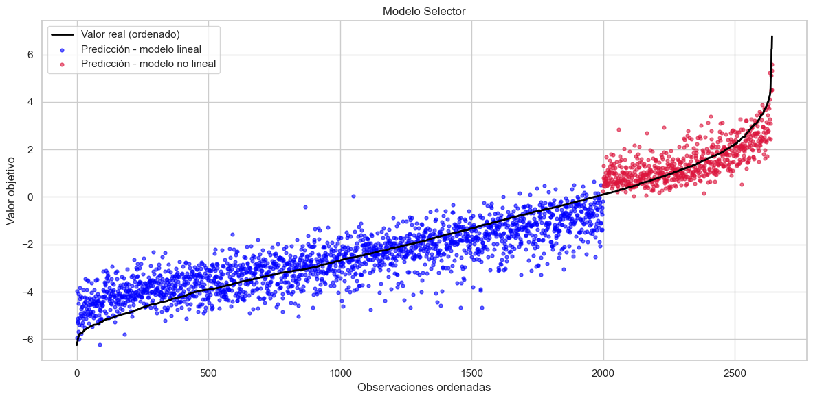
residuos_selector = y - y_pred_final
residuos_total['Selector']=residuos_selector
residuos_total.describe().T
| count | mean | std | min | 25% | 50% | 75% | max | |
|---|---|---|---|---|---|---|---|---|
| K-NN | 8805.0 | -0.067248 | 1.291687 | -4.744875 | -0.944379 | -0.135585 | 0.713805 | 7.215986 |
| Regresión Lineal | 8805.0 | 0.004227 | 1.369959 | -4.436312 | -0.953988 | -0.074371 | 0.833482 | 7.553798 |
| Regresión Ridge | 8805.0 | 0.003882 | 1.371386 | -4.502408 | -0.954756 | -0.073938 | 0.836357 | 7.595279 |
| Regresión Lasso | 8805.0 | 0.003658 | 1.373725 | -4.544291 | -0.955886 | -0.073250 | 0.840596 | 7.619076 |
| Random Forest | 8805.0 | 0.005318 | 1.058193 | -4.515100 | -0.713661 | -0.016607 | 0.645951 | 6.613149 |
| XGBoost | 8805.0 | 0.003356 | 0.942905 | -4.634415 | -0.625020 | -0.045331 | 0.574439 | 6.401959 |
| SVM | 8805.0 | 0.103864 | 1.280459 | -4.834771 | -0.728242 | 0.001717 | 0.785092 | 8.026729 |
| Stacking | 8805.0 | -0.002406 | 0.674296 | -3.562280 | -0.412440 | -0.036079 | 0.367428 | 6.425664 |
| Selector | 8805.0 | -0.000867 | 0.603266 | -3.226457 | -0.338453 | -0.013235 | 0.309042 | 3.473954 |
for idx, residuo in enumerate(residuos_selector):
if residuo > 3:
print(idx)
2540
4135
4499
indices = [idx for idx, residuo in enumerate(residuos_selector) if residuo > 3]
filas_filtradas = df_copy.iloc[indices]
filas_filtradas
| Hypocenter Depth (km) | Magnitude | Tectonic environment (Crustal; Inslab; Interface; Stable; Deep; Volcanic; Oceanic_crust) | Nodal Plane 1 Strike (deg) | Nodal Plane 1 Dip (deg) | Fault Plane (1; 2; X) | Style-of-Faulting (S; R; N; U) | Station Elevation (m) | Tn | Rhypo_OpenQuake | T_0.01_RotD50 | |
|---|---|---|---|---|---|---|---|---|---|---|---|
| 2540 | 10.0 | 4.8517 | Crustal | 171 | 71 | 1 | S | 322.0 | 0.14 | 6.756368 | -0.156615 |
| 4135 | 10.0 | 4.9127 | Crustal | 163 | 72 | 1 | S | 436.0 | 0.46 | 7.140286 | -1.199045 |
| 4499 | 10.0 | 4.8517 | Crustal | 171 | 71 | 1 | S | 1059.0 | 0.10 | 6.250553 | -1.456922 |
residuos_reales_largo = residuos_total.melt(var_name='Modelo', value_name='Residuos')
sns.set(style="whitegrid")
plt.figure(figsize=(12, 6))
sns.boxplot(x='Modelo', y='Residuos', data=residuos_reales_largo, palette="Set2")
plt.title('Distribución de Residuos por Modelo (CONJUNTO TOTAL)', fontsize=14)
plt.xlabel('Modelo')
plt.ylabel('Residuos')
plt.xticks(rotation=45)
plt.tight_layout()
plt.show()
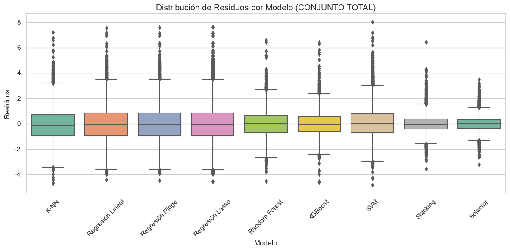
mape_selector = mean_absolute_percentage_error(np.maximum(y_test, epsilon), y_pred_final3) * 100
#MAE
mae_selector = mean_absolute_error(y_test, y_pred_final3)
#RMSE
rmse_selector = np.sqrt(mean_squared_error(y_test, y_pred_final3))
#R2
r2_selector= r2_score(y_test, y_pred_final3) # R²
# Calcular Ljung-Box (test de autocorrelación de residuos)
residuos_selector = y_test - y_pred_final3
ljung_box_selector = acorr_ljungbox(residuos_selector, lags=1, return_df=True)['lb_pvalue'].iloc[0] # p-value
# Calcular Jarque-Bera (test de normalidad de residuos)
jb_test_selector = jarque_bera(residuos_selector)
jarque_bera_selector = jb_test_selector.pvalue
tabla_resultados = pd.DataFrame({
'Modelo': ['K-NN','Regresión Lineal','Regresión Ridge','Regresión Lasso','Random Forest','XGBoost','SVM','Stacking','Selector'],
'MAE': [mae_knn, mae_regl, mae_ridge, mae_lasso, mae_rand, mae_xgb, mae_svm,mae_stacking,mae_selector],
'RMSE': [rmse_knn, rmse_regl, rmse_ridge, rmse_lasso, rmse_rand, rmse_xgb, rmse_svm,rmse_stacking,rmse_selector],
'R²': [r2_knn, r2_regl, r2_ridge, r2_lasso, r2_rand, r2_xgb, r2_svm,r2_stacking,r2_selector],
'Ljung-Box p-value': [ljung_box_knn, ljung_box_regl, ljung_box_ridge, ljung_box_lasso, ljung_box_rand, ljung_box_xgb, ljung_box_svm,ljung_box_stacking,ljung_box_selector],
'Jarque-Bera p-value': [jarque_bera_knn, jarque_bera_regl, jarque_bera_ridge, jarque_bera_lasso, jarque_bera_rand, jarque_bera_xgb, jarque_bera_svm,jarque_bera_stacking,jarque_bera_selector]
})
tabla_resultados
| Modelo | MAE | RMSE | R² | Ljung-Box p-value | Jarque-Bera p-value | |
|---|---|---|---|---|---|---|
| 0 | K-NN | 1.087727 | 1.380024 | 0.644261 | 0.278273 | 2.042609e-23 |
| 1 | Regresión Lineal | 1.091288 | 1.392489 | 0.637805 | 0.786225 | 5.794007e-38 |
| 2 | Regresión Ridge | 1.091540 | 1.393594 | 0.637230 | 0.845846 | 6.203846e-38 |
| 3 | Regresión Lasso | 1.092682 | 1.395503 | 0.636236 | 0.874495 | 9.424036e-38 |
| 4 | Random Forest | 0.889094 | 1.124339 | 0.763869 | 0.646184 | 7.348095e-23 |
| 5 | XGBoost | 0.770526 | 0.987792 | 0.817741 | 0.532367 | 7.159677e-46 |
| 6 | SVM | 0.998944 | 1.318057 | 0.675491 | 0.735189 | 1.105198e-89 |
| 7 | Stacking | 0.657735 | 0.865596 | 0.860045 | 0.944214 | 1.910119e-170 |
| 8 | Selector | 0.616460 | 0.793923 | 0.882262 | 0.972109 | 1.162681e-19 |